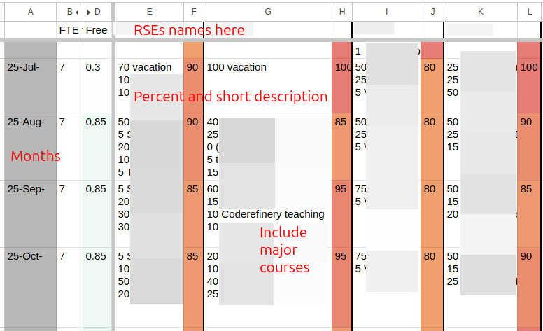

Aalto RSE training
This is the Aalto RSE and Aalto Scientific Computing training and team reference material. It’s not a textbook or course, but a reference for use during mentoring and of what the expectations are. There is both general information that may be useful outside of Aalto, but plenty is specific to our team, especially the later sections.
The first parts are mainly about the roles when moving from an individual researcher to a consulting engineer in a team, the middle part is topical knowledge reference about, and latter parts are our team procedures.
This site is still under construction and “wiki rules” are in effect: make improvements and iterate, someone will come later and clean it up. I’m also happy if this is useful to others and there are suggestions to make it more useful outside Aalto - if there is a lot of outside interest, the Aalto specific stuff my be split out. Current editor: rkdarst.
What is a RSE at ASC?
You can find plenty of definitions online: Somewhere between researcher and software developer. A researcher whose output is measured by software (or data), not only journal publications. A computational specialist in a research group. And many more.
These are all true, but not really relevant for this training. You know how to be a researcher (and can learn), and know how to use the tools of software, data, and computing (and can learn). What we need now to go from these to being a good collaborator between groups. If you were just doing the things above, a group would hire you themselves. What a new member of our team needs to learn is how we operate as a team, how it’s similar and different than typical research groups, and how we interact with research groups. It’s a much less individual role than an academic researcher, with different types of skills. It’s challenging to speak in two different languages, a highly technical one with our team and a higher-level one with our customers who often do not need to go as technical.
What does “engineer” even mean? It’s not just someone that knows some tools or practices. It’s someone who can balance the limits of technology, the needs of the customer, and broader costs (to the customer and society. While a researcher can come up with ideas, and a developer can do the development they are asked to do, a RSE critically looks at the needs and comes up with the right solutions, efficiently, taking into account the special needs and uncertainties of research.
You should always keep in mind that we are here to help research and researchers, not technology. This often means adapting the technology to what people actually need, not trying to force people to adapt to the technology when it doesn’t make sense. We should give confidence to our customers to carry on by themselves after we are done. We live and die by how our customers see us.
What makes Aalto RSEs different from academic researches:
We focus on supporting other researchers, instead of making our own research ideas. (We do come up with plenty of new ideas, but it’s at the tool-layer, rather than the idea-to-publish layer).
Our standards are higher. We are expected to know our stuff, and not just be learning it while we are doing. (this applies collectively, individually we are all learning new things)
More determination and focusing on a few tasks (getting them to completion) rather than doing too many things at once.
Our standards of communication are much higher.
What makes Aalto RSE different from RSEs in other places:
We tend to have a wider variety of small projects going on and we have more emphasis on teaching and general support.
We are a research infrastructure organizationally located in an academic school. We aren’t “IT people”, we are research support. Our mission is much wider.
Compared to software developers:
We have much more research experience and can usefully discuss with researchers about their needs without a middle layer of managers.
We do not just work on “software” but everything related to computing.
We don’t just build to a specification. The customers often don’t know what they need, so we need to work as equal collaborators to figure out what that specification is.
We work in research so the specification is often changing and needs to be developed very iteratively (and with the room to do those changes when needed).
Terminology
This is mainly rkdarst’s convention, but we often say:
Research Engineer as the general concept of someone who is supporting research with technical skills but isn’t focused on academic publishing as their main output.
Academics are researchers who are mainly judged by the conventional academic career system (publications and citations). Most of our customers are academics, but many are interested in far more than just the academic career system.
Researchers are people involved in the research process, both research engineers and academics. We should not undervalue ourselves - in any non-university team, we would definitely be considered researchers.
Still, we often say “researchers” to mean “our customers”, as in the academics who aren’t us.
This is not strict terminology but useful to put us on the right page.
Further reading
Architects, engineers, and other infrastructure staff in universities by rkdarst. A metaphor of RSEs to building construction.
RSE lessons from Civil Engineering by rkdarst (Aalto library book link). This extends the metaphor above by looking in-depth at how civil engineers may work.
Lower priority reading:
What is ‘R’? What is ‘S’? What is ‘E’?. Blog post on a discussion at a Nordic-RSE conference, on a thought experiment with removing each letter from “RSE” to see what changes.
Exercises
What-is-rse-1: General explanation
Goal: Practice the general technical explanation of what we do.
You: Roleplay answering your partner’s question. Explain why they, mostly non-computational, might someday be interested in RSE services.
Your partner: Roleplay a researcher in the School (faculty) of Engineering asks you what our team does. Pretend your research focus is measuring the strengths of various materials in laboratories. (You can make up a different research topic)
What-is-RSE-2: Pitch for a research day
Goal: Refine our pitching of RSEs and see how others
Imagine that you are at a public event such as a research day or academic conference. Gives a 1-3 minute pitch looking for more RSE projects, like you might tell to someone who approaches us at a research day. Compare to others in your group and discuss the different selling points you focused on.
What-is-RSE-2: General audience explanation
Goal: Practice interacting with people who have no idea of research or academics.
You: Roleplay answering the question below.
Your partner: Roleplay a non-technical family member asking “What do you do for work?” and listen to the explanation. Ask some questions and give feedback.
General background information.
Roles intro
This section lists various roles and the training for them. The roles are not very formal and in practice everything gets blended together However, for the purposes of new people getting started and not having to learn everything all at once, it makes sense to try to classify them somehow.
Everyone will take their own path to get started. Teaching these roles is mainly (in 2026) via mentoring. Everyone make take their own path. Also note this material is a work in progress and will be developed along with the mentoring.
Role list
Responsibilities |
|
|---|---|
The default RSE job: for a project, learn and/or apply the necessary scientific and technical background and work on it over time in close collaboration with the customers. This includes project planning when projects are straightforward. Primary challenges include ongoing communication with the customers. |
|
Help users with drop-in questions in garage and other short-term support. Questions may be anything, and customers may be helped directly, you may call someone who can help, or they can be directed to other help (with advice). Primary challenges include the huge variety of questions which may come, and the need to think on your feet. |
|
Teaches (+other support) in courses, mainly using the CodeRefinery teaching strategies of co-teaching, collaborative notes, and livestreaming. Teaches with compassion and always reminds learners that stuff is actually difficult and people are not alone. Always maintains a critical mind about what should be taught (as opposed to blindly recommending best practices that aren’t practical for the audienc). |
|
Project planner (architect?) |
This person has enough broad experience to to untangle what the customer actually needs even when they may not know (or it may not be possible). Meet with customers to create the initial project plan, critically ask questions, and guide the work. Mentors junior RSEs in the project process. Primary challenges include understanding the optimal solution when even the customer may not know what they need and conveying risks and limitations. |
Work with junior RSEs (or researchers) in the execution of projects, giving pointers and co-working to teach them new skills. Mentors junior RSEs in our project process. Primary challenges include the hands-on teaching and knowing the tech. |
|
Keep active communication with the unit, including telling them about general RSE activities, attending unit meetings, and keeping an active search for projects. Primary challenges include networking with diverse busy people. |
|
Manage HR and financial practicalities, especially including ultimate responsibility for mentoring and productivity of all team members and the team itself. |
Someone somewhat humorously described these roles by what tools peolpe use:
Project work: code editor
Garage: zoom
Teaching: OBS and Twitch
Project planner: email & docs
Technical mentor: zoom or air (in-person sound transmission medium)
Unit liaison: coffee room
Team supervisor: spreadsheet
Project worker
Summary
“Project work” refers to any bigger projects done for customers. Typically, a customer will request something, it’s worked on over several weeks or months, and eventually it’s concluded. There is often ongoing support and consultation afterwards. Projects may take the form of long-term consulting or co-working, or a whole aspect of a project being independently delegated to the RSE.
Initial planning is a major task, because far too often a project is started without a clear end goal. This is normal for research, but when things are being given to an outsider to work on, the expectations are higher. Often times, we have to help the customer figure out what they should want, but this starting planning is listed under Project planner.
Since the starting process is described under Project planner, the major challenge of this section is communication and co-working practicalities. How to record the time spent and effort? How to keep an open communication with the customers, so that the project doesn’t go off the rails? And so on.
Main challenges/pitfalls
Working within a research group, without actually being part of it.
Maintaining close enough communication so that expectations are met.
Fully understanding what’s going on and the expectations.
Realizing when the customer doesn’t just need something done, but needs help coming up with how to do it. You are a researcher, not a contracted developer.
Avoiding too much independent work (showing only the final result) instead of working iteratively with continual feedback.
Gracefully handle major changes to the plan, possibly throwing everything off track.
Gracefully handle customers who have something else come up and thus stop being responsive to us at all. Figuring out what you should do then: how to avoid it looking like you were inactive when they come back (unless that is what was desired).
Not recording or being clear when the project goals drift. Then ending up at a point where we and the customer have different expectations and are unhappy.
Customers who don’t know as much about the project as you do (managing their expectations, keeping them in the loop, etc.).
Expectations / checklists
When the request is clear and you can do things without help, negotiate and start projects yourself. When it’s complex or there is any chance that the customer needs you to help develop the idea, use the ideas from Project planner.
Use a researcher’s mind and a developer’s tools to solve the customer’s problems.
Maintain active communication with the customers, especially making sure that we avoid common pitfalls (see above)
Discuss frequently with your mentors to ensure that you stay on track and they have the info to intervene if it ever became needed.
Keep the customers up to date with what you are doing (for example at least weekly but ideally more), in a language customers can understand, in enough detail so that they can warn you if something is going wrong.
Use the rse-projects repository issue tracker to keep track of what is going on
Record worktimes via Halli {if,as} needed - and know if it should be.
Ask for help when you need it.
Give a report in the RSE meeting once a project is done.
External materials
Many other things on Research Software Engineers
Checklists section
Training program: materials and exercises
Demonstration: going through the rse-projects gitlab tracker
It can be useful to set a calendar time each week to send a status report to each major project you have. This reminds you to do it and reserves the time.
Garage supporter
Summary
The “SciComp garage” is our daily office hour, where people can come and ask us anything. Answering these questions is a quite demanding responsibility, and you need to be able to think on your feet and not get stressed when you don’t know something.
Garage is not just a time to help others, but the common time we can talk with each other, and most importantly learn from each others’ answers. When you see someone give an answer you aren’t familiar with, always take the time to ask “what did you just do?” so that you can learn more.
Main challenges/pitfalls
You will often be asked things you don’t know right away. (A broad solution is: ask for more info in the way you would debug. For example, start by asking to share the screen and show the exact problem).
You need to be able to know other people (ASC/RSE/ITS/research services/etc.), to be able to refer customers to them when appropriate.
A lot like the “planner” role, you need to be able to understand lots of different things and advise on the best solution trade-off for each customer individually, without the time to take a break to plan.
Helping people while still giving them confidence that they can and should keep trying themselves (and not over-playing your confidence).
“Too many cooks” problem when too many staff try to support the same person, simultaneously asking questions and giving instructions.
Expectations / checklists
Attend the garage whenever it’s convenient (usually we have plenty of people, so if something else comes up, do that instead). However, attend often enough to stay connected to the team.
Treat all customers with the highest level of respect, regardless of their background or current experience level.
Make sure someone greets all incoming customers.
For each support case, make sure that one person (and not more than one) is the primary communicator, to prevent the customer from getting overloaded.
Ensure that you understand the full scope of the customer’s request before diving in, especially the questions listed on Help (has it ever worked? what are you trying to accomplish? what did you do? what do you need?) (Avoid the XY problem.)
Recognize difficult communication situations and act to make it better.
When someone departs garage, give them encouragement to keep trying themselves, that “yes this is hard, but you can do it”.
You may ask people to come back another day (or schedule another meeting) if you need more time to figure it out, or you need a different person to be present.
Help as best you can and ask for help from others when needed.
Observe other answers so you can learn new things, and ask follow-up questions once the customers leave.
Record visits in the garage diary, but don’t make a big deal out of gathering this information.
External materials
How to help someone use a computer by Phil Agre
How to ask for help with supercomputers by Radovan Bast
Training program: materials
Exercises
Garage-1: Roleplay a fairly normal support request
Goal: run through a fairly normal support request.
Your partner: roleplay coming to garage and asking some normal-ish question.
You: roleplay answering a fairly typical garage customer. Figure out who they are (department/position), what their topic is, decide that you can handle it, exact details of the problem, solving the problem, telling them next steps and you know they can do it.
Garage-2: Roleplay a support request where you don’t know the answer
Goal: practice telling a customer that you can’t help them right now and giving other options (for example, coming back the next day, waiting a bit for someone else to be free, sending email to arrange a specific meeting, directing them to some other team)
Your partner: roleplay coming to garage and asking something.
You: roleplay the above. The script should go like the previous exercise but you can’t answer it directly. (you can also pretend you can’t answer it even if you can)
Example cases:
Some highly advanced multi-node GPU work.
It’s about data storage in ENG and needs their admin support (not general usage that we could do)
Garage-3: Roleplay with an insistent customer
Goal: practice your confidence when dealing with customers who won’t let go of specific misconceptions they have.
Your partner: You are a customer is in the garage insisting you know the best way to do something or what is wrong.
You: roleplay responding to the request. Try to talk them down and at least have them leave on good terms, since they never seem to give it up.
Example cases:
Arguing that they should be able to “sudo apt-get install” something and make it just work on Triton, continually arguing when you try to explain why it doesn’t work.
Or why can’t they simply run their Python code, saying that batch isn’t needed. They keep insisting “just help me do X” and acting like we are the problem.
Garage-4: Why garage?
Goal: practice explaining to someone about why they should visit garage (and in general ask for help).
Your partner: Roleplay a family member explaining why they don’t wan to go visit a (medical) doctor, with various reasons (I can handle it, I’m afraid of doctors, they aren’t nice to me / don’t tell me what is going on, etc.)
You: Explain why it’s better to ask help and how we are better than others.
Twist: This isn’t about medical doctors, this is about computing [note: This exercise comes from the somewhat frequent complains I hear about doctors not communicating well, and it leads to people wanting to stay away. I think there are significant metaphors to learn from here]. Mentally adjust the situation above for computing support in garage. Discuss the similarities and differences.
Garage-5: Roleplay someone in over their head
Goal: practice a frustrating situation where it seems, no matter what you do, you won’t be able to help the customer. Find a way to leave them at least a little bit motivated and with an idea for what to do next. (Note: if this happens and it needs to be escalated to the supervisor, contact one of the team leaders.)
Your partner: Roleplay a customer in over their head.
You: roleplay responding to the request. Try to leave them feeling encouraged somehow and with something to do next. Try to understand their background to make the next recommendation.
Example cases:
The customer only know how to use AI to do things, but they need to know more now.
A customer (new summer research assistant for a ML group) comes to the garage and is clearly in over their head and asking you to do very basic things (ssh, opening a file, editing a file even through Jupyter/OOD), things that even a new summer intern should be able to do. Take, for example, making a Python program run via the command line (they have never seen a command line before and they can’t even begin). This has been happening for several days with the same customer now. You think there may be some deeper problem and their supervisor needs to get involved.
Garage-6: Roleplay answering some recurrent students
Goal: practice telling students (or someone) that they need to use someone else as their primary support channel. Discuss what we do vs what others should do.
Your partner: You are one of a group of students who has been coming each day working on a project. You have just learned this is a project for a course. The students have permission to use Triton (since this is a project with research data with a research PI theoretically supervising), but they have begun asking us about the analysis of their data.
You: roleplay responding to the situation.
Example cases:
The project is analyzing some social media data and the questions have been about the concepts of network analysis and using a database for the data.
(Note: We can help students in these cases, especially about the mechanics of using Triton. But we can’t replace TAs who should be the first line of support, since courses can direct large numbers of students to us at once, and only the course staff can scale that large.)
Garage-7: Explain some topic in progressively more depth
Roleplay: you have a garage customer, and you are not sure how in-depth they understand some topic. Explain the topic progressively from the big overview, to more and more detailed. Each explanation should be ~30-60 seconds. Can you manage 3-5 explanations on the same topic? Make sure that the customer understands that you always need to start big, even if you are pretty sure you understand
You can choose the topic. The purpose is that when working with a customer, you may not know how knowledgeable they are, so you should start wide (acknowledging they may know this, but you need to be on the same page), and then go deeper.
Sample topics: data storage and transfer. Connecting to Triton. Slurm batch jobs.
Other
Psychology of support
How to help someone use a computer
Roleplay: garage help
Exercise: comment on a simulated bad support session
Roleplay: suggest to a colleague that their support could have been improved
Finding the real problem within the question
Usability
Teamwork
Work together but one person in charge of each support session
Teacher
Summary
Aalto RSE spends a significant amount of time teaching, because that’s a good way to help the widest number of people. It also helps to bring projects into us. When we see something that is taking up a lot of our support time, we can add it to our courses to save time long-term.
Teaching isn’t just being in front of people and talking, but there are very many parts to our collaborative teaching: co-teaching, collaborative notes, livestream broadcasting, lesson development, organizing courses, and more.
Main challenges/pitfalls
Getting use to the CodeRefinery teaching style (though once you are used to it, it’s actually less work)
Managing time for lesson maintenance and development.
Teaching with the mindset of a learner (and what thy need to know), not trying to teach them to be like you, an experienced RSE.
Expectations / checklists
Take part in the Instructor kickstart program.
Optionally, take part in CodeRefinery “train the trainer”
Begin by co-teaching working lessons with experienced instructors. Do this 1-2 times.
Prepare before teaching: Teaching plan and Lesson review checklist.
Set up you computer for teaching following all the best practices (in addition to all the other things you learn during the instructor kickstart).
Take on the role of primary instructor during workshops.
There are other things you can do as well:
Broadcasting
Video editing
Course organizing
Major lesson development
etc.
External materials
Demo of livestream teaching (read the video description) by rkdarst
Motivation to CodeRefinery instructor training by rkdarst (includes ideas for teaching). (readable transcript)
Carpentries Learner-centric teaching (Link to material).
(we currently think that) This is like Carpentries instructor training, but focused on the teaching pedagogy and without the material to become a certified Carpentries instructor.
Other
Course arrangement
Teaching philosophy
Training program: materials
Exercises
Teaching-1: Explain a game
Purpose: have some fun while practicing rigorously explaining new concepts to a group (and also practicing evaluating how well the explanations went and giving recommendations to a colleague). We use these lessons in our teaching.
See Exercise: game teaching for full exercise description.
Teaching-2: Practice a course intro
Take one of the lessons we teach (or something new) and a partner (for team teaching), and give a 3-5 minute intro of the lesson to your group. Pretend that you are livestream teaching to a broad audience.
Others: give feedback and discuss.
Project planner
Summary
The “project planner” may be better called a project mentor, or architect, or something like that. (If you have a better name, let me know). This role takes a new project request from a customer, figures out what they actually need, and makes the plan for how to do it. If the task is very clear, one could go straight to doing it (Project worker), but many times we are the computing expert, not the customers. In these cases, we need to work with the customer (domain expert) to figure out what is needed.
The “project planner” is distinct from Project worker since you may hand off the main work to someone else to actually do, possibly serving as their Technical mentor during the project. In short, figuring out what to do is usually harder than doing it (at least it’s a different skill). That’s why we have multiple people involved.
Main challenges/pitfalls
Customers may not know what they need (and maybe not even what to ask for). If we do exactly what they ask, we may do the wrong thing. We need to carefully work to find out what the goals are. This is research, and you are a part of a research team, not a contracted developer.
The job requires having a broad knowledge of what tools are available and even going and learning more to plan the project.
Defining what is our responsibility and what is the customer’s responsibility.
Planning enough to know what to do, while taking into account that in research the long-term plan may not be known.
Even after you do know what to do, explaining it clearly and concisely enough that the customers and others can understand what is happening. (This often happens when needing to present the project to more customers than the original ones.)
Determining if the customer-RSE relationship is enough, or if extra support such as project managers are needed.
Customers may present overly broad project plans, perhaps even generated with AI and thus not realistic or representative of what the customer actually needs.
It can sometimes be difficult to know if a project even should be accepted, or declined (and in that case, providing the next best options to the customers).
All the risks that come with research and software development, combined.
Expectations / checklists
Serve as the second contact to projects (first contact may be someone hearing the broad idea and suggesting a meeting) and organize a planning meeting with the right people.
During the planning meeting, really figure out what the people need (which may require digging, and also helping to come up with what the right solution is). Assume you are part of a research team, not a contracted developer.
Use your experience and communication skills to develop a workable plan along with the customers.
Write down the plan so that everyone is on the same page and expectations are known across all sides. Clearly allocate the different types of work to RSEs or academics.
Avoid the XY problem.
Ensure that customers are aware of any risks and you have a plan if the risks come.
Identify risks on our side due to lack of skills or domain knowledge and make sure that risk is mitigated (learning something, more active customer involvement, adding more checkpoints, or making sure the customer knows the risk exists.)
Ensure that there is someone to manage the project, as much as needed, if the RSE can’t do themselves.
Have initial finance discussions (team supervisor needs to finalize it).
Present the project in the weekly RSE meeting and your evaluation if we should take it or not. During this meeting, also help the team come up with the right people to do the project. You don’t necessarily have to do every project yourself, even if you are involved in planning them.
Have the courage to say “no” when that is the best answer, and decide when that is the case. In these situations, make a plan with the next-best options for the customers to do what they need to do.
If someone else new is working on the projects, mentor them with the material from Project worker.
If you aren’t working directly with the project, stay engaged enough to keep the project on-track, either as a Technical mentor, domain mentor, or general mentor role.
External materials
… and almost everything else on Research Software Engineers
Training program: materials
Exercises
Future todo: making the first Gitlab issue?
Planner-1: Roleplay a straightforward project (concept meeting)
Goal: practice the first meeting with a potential customer and establish the basic principles of doing a project. Walk them through what to expect in the RSE project process.
You: roleplay answering the situation below. Ask the basics and establish if the concept of RSE is appropriate for the project, what will happen, etc. You don’t have to pretend to be the one to do the project, but you are getting enough info to take it to a weekly meeting to find the right person to go to the next stage.
Your partner: roleplay a customer requesting a fairly normal project.
Example cases:
LUMI porting
Optimizing some HPC software
Developing a web visualization for some data
Adding documentation, testing, packaging, etc. to some existing project.
Creating a data analysis pipeline.
(you can think of your own things, too)
Planner-2: Roleplay a planning meeting, continuing from above
Goal: practice a structured way to plan out the project, so that everyone leaves with a clear idea of what will happen. Practice with the template project planning doc or equivalent, and co-editing a doc to produce a plan.
Like the exercise above (maybe combined with above), but fill out all template doc and make a plan for what should actually happen (the “planning meeting”). Go through, extracting information about what needs to be done, discuss who does what, and write it down.
(For this exercise, you probably want to use an involved-enough project that both people understand enough and could possibly do)
Planner-3: Roleplay responding to a project request we can most likely not fulfill
Goal: practice directing the customer to other resources or otherwise finding their best way forward, even when we have to say “no”. (This would normally not happen in the concept meeting, but you would take it to the weekly meeting to present to others anyway. You can pretend you did that already, or just pretend you already know we can’t do it.)
Like the exercise above, but you need to tell the customer that it’s not within our capacity (either time or skills) right now. Give a special focus to making sure they have some other path forward.
Your partner: there are different reasons we might not be able to fulfill the project:
It takes too long (years of time, better to hire someone themselves)
It is too specialized (ENG researcher needs specialized laboratory instrument programming, ASIC programming, or something).
They need CPU design
Planner-4:: Roleplay digging to figure out the project
Goal: customers don’t always volunteer important information about the project easily. Practice your skills at digging in, so you won’t forget to do it later.
You: roleplay talking with the customer to figure out their project, and discuss if you can or cant’ do it.
Your partner: present your own previous work as an RSE project. Don’t be too specific (in fact act a bit shy and non-communicative) and force your partner to ask questions to dig deeper and happening.
Technical mentor
Summary
The technical mentor isn’t so much a role, but skills that are used in all the other roles. Mentoring is just so important that we give it a top-level entry. A top-level entry also ensures that people can get credit for mentoring and reserve time for it.
As of 2026, we think we do this fairly well. Garage provides informal time for internal mentoring, and external mentoring. We expect to hire people who are willing to speak up and ask for help (to pull in internal mentoring when they need it), but we need to be aware if this assumption ever breaks.
Main challenges/pitfalls
Mentoring is hard and a different job from doing things yourself.
Computing is our life, but only a side-project for many of our customers. We are happy to spend time experimenting and learning by doing, other customers may want a more direct solution. Customers are very good at other things.
Expectations / checklists
Check Garage supporter for some relevant things.
Treat all customers with the highest level of respect, regardless of their background or current experience level.
Before diving into a session, make sure you explicitly discuss what the mentee wants and how they expect to get there.
When done, ask if you have been helpful and have done what they needed.
As a doctor, you learn to never ask patients ‘did you understand me?’ Instead, you always ask ‘did I explain it clearly enough?’” That way, the burden of understanding is on you, not the patient. The same philosophy is useful for technical mentoring.
If users apologize for not knowing things, reject it - say “it’s OK, no one is born knowing this, everyone asks similar questions, etc. Learning is a long process, you’ve focused on other things. We are here to help.”
Plenty has been written about mentoring… I’m not going to write much more here right now.
If a customer or mentee is ever frustrating you and you realize you are reaching your limits, recognize this. Ask for help or even hand it off.
If you realize that someone is completely in over their head and needs more fundamental help, also realize this and let your team leader know.
Internal mentoring:
Be aware of who is new on the team. Talk to them. Invite them to see what you do, when you do new things. Tell them enough so that they’ll keep talking to you later.
Give extra time to answer new people’s questions, go and screenshare and so on.
As the team gets larger, don’t assume people will speak up as often as you did when the team was smaller.
External materials
How to help someone use a computer by Phil Agre
XKCD #2501 (average familiarity)
Carpenteries instructor training, Expertise and instruction
Training program: materials
See Garage supporter - some of the materials and exercises there are relevant here and can sometime be split up.
Exercises
Mentor-1: Discussing with another staff member about a sub-standard support session
Goal: you noticed a support session in garage that you thought could be improved. Respectfully bring it up and tell your team member that you think something could be improved.
You: roleplay telling a colleague that their support could have been a little bit better.
Your partner: Listen to the feedback.
Example cases:
Your colleague’s explanation was too technical for the apparent level of the customer.
Your colleague said “shouldn’t you have learned this in [course]”
Your colleague sent the customer away saying they need to learn more first, but didn’t make it clear how to start that.
Unit liaison
Summary
A unit liaison mains close connection with the various other units, presenting the work of ASC to them and often being the first line of starting a new project. They may be the Project planner of some of that unit’s projects, but they probably aren’t the only one doing that (and it isn’t necessarily the expectation).
For example, we may have unit liaisons to CS, NBE, PHYS, FCAI, ELLIS, IT Services, etc.
Main challenges/pitfalls
It helps to have a pre-existing connection to the unit.
It can be difficult to remember take the time to reach out when you have so many other things going on - it’s always a low priority, when you are already too busy with existing projects.
It can be difficult to explain why we exist and why people should use our services (academics want to do things themselves).
Remember to take the customer perspective. To us, they are “customers”, but they are just researchers with research problems. Don’t focus too much on the idea of “starting a project” or “project process”. Instead, focus on “what are your computing or research problems?”
Customers expect you to have a broad knowledge of everything ASC does and this basic knowledge puts you on the right foot.
All the typical things that are involved in being a customer relations person.
Expectations / checklists
Be a first line of contact to the unit (which doesn’t necessarily mean you should be getting all the personal email from them, but you can grab their stuff from other issue trackers, advise others when you see their issues, etc.).
Be broadly aware of what is going on in your unit.
Be the voice of that unit to our team.
Stay in touch with the coordinators/leaders of the unit and get invitations to important events.
Where practical, go to the unit meetings and other events to represent the team.
Run Group meetings for groups within the unit, or at least help arrange them and get others to come.
External materials
Training program: materials and exercises
This is probably mentored and learned on-the-job.
Exercises
UnitLiaison-1: Give a ASC introduction
Roleplay giving a sample 3-5 minute pitch of ASC services to a department meeting. You get to pick the department.
UnitLiaison-2: Knock on someone’s door
Roleplay visiting an office of a group leader and talking about RSE services. (you can also imagine talking in a coffee room, to other group members, etc.)
Team supervisor
Summary
The team supervisor is the one official responsible for the team. They manage the HR, finance, and organizational aspects. They are ultimately responsible for making sure that every other part of the team works well.
Main challenges/pitfalls
It’s a different job that any of the other jobs.
Aalto provides some training, but you still need to learn most things as you go.
Expectations / checklists
Ensure the team mentoring and onboarding system is working well, and all team members are happy and have what they need.
Maintain contact with HR and Finance
Decide about matters for project funding.
Be aware of the team enough to know if there are problems, and deal with them.
Intervene in projects for which the customer is not satisfied. Follow up enough (possibly out of band) to know when this is the case.
Coordinate hiring.
External materials
The Manager’s Path: A Guide for Tech Leaders Navigating Growth and Change (book, available online from the Aalto library).
Training program: materials and exercises
Mostly mentored and learned on-the-job.
Exercise list
Below is the list of all exercises in this material. They aren’t made to be done straight-through but inspiration for small-group practice and discussion. Obviously, everything should be adjusted to what ever fits the time and needs of those doing the exercises.
This section tells some of the main roles in our team and how to prepare for them. In practice, there is no real division, but this division hopefully makes onboarding more manageable (according to one’s onboarding plan).
About the “Topics” section
This is the “advanced RSE-like topics” section. Topics may either be generic technical topics or Aalto specific things - or often both combined.
These pages summarize technical topics which a RSE may need to know. They are neither a user-focused explanation (RSEs can find those themselves) or a highly detailed review (RSEs can also find that themselves), but perhaps an overall summary of what RSEs should know. They may be more or less in-depth. They may go deep in depth if it needs to be documented somewhere, but it should be clear what everyone should know and what is advanced.
Typical structure:
(intro) What is on the page
Background (it is likely to be known, but should be stated to ensure everyone has a fair chance)
Actual main material, not Aalto specific if possible
Aalto specific practices
Plenty of links to other material
What is Aalto University?
(This page should give an introduction to what is Aalto university is, the main units, how to understand what is happening outside our team.)
IT in Aalto
IT Services (“ITS”) is the main IT unit of Aalto University. It should be noted that we are not part of IT Services and we are not “IT people”. We are “Technical Services”. IT Services has many diverse units from operations to user support. Of particular note are teams called “IT Services for Research” and the “Cloud team” which also does a lot of AI platforms.
Arrangement of ITS
Data storage
Compute services
Department IT
Who is there
Services
CSIT
PHYS IT
CSC * HPC * Data services * Server computing services * Teaching
Material
IT Services for Research - a good but long overview of what is available.
Research services at Aalto
Research Services is a university-level unit that supports things such as grantwriting, research funding administration (“post-award”), library services and open science, and other special services.
Tech stuff
(this page could be split out into more focused topics)
This list is made for new people, who have been hired as RSEs at Aalto. This isn’t a list of what someone has to know to apply, and not what people should know before starting. It only provides a map, a RSE will incrementally learn things here (and probably things not on the list - this list is what we already know). In the future, we expect this list to be copied and reused in other contexts.
Someone might take ~6 months to slowly learn things on this list as they need them. Not everything will be needed.
Linux and shell
Shell scripting and the OS interface
Advanced Bash SCripting guide: https://tldp.org/LDP/abs/html/
Containers
Docker: https://docs.docker.com/get-started/overview/ (though we don’t Docker on the cluster, it’s good to know anyway)
Dockerfile reference: https://docs.docker.com/engine/reference/builder/
Apptainer (formerly called “singularity”):
This is what is actually used on the cluster
Key things: make own container, convert docker to apptainer, how to run on cluster
singularity_wrapper and how it works with Lmod: https://scicomp.aalto.fi/triton/usage/singularity/ (load a singularity module and you can see where the script is)
Lmod:
(hint: personal modulefiles: mkdir ~/modulefiles ; module use ~/modulefiles)
Mainly basic use + writing modulefiles
Conda
especially resolving GPU code related issues
Software development tools
CodeRefinery lessons (https://coderefinery.org)
git-intro: https://coderefinery.github.io/git-intro/
and git-collaborative: https://coderefinery.github.io/git-collaborative/
Reproducible Research: https://coderefinery.github.io/reproducible-research/
Documentation: https://coderefinery.github.io/documentation/
(Jupyter: https://coderefinery.github.io/jupyter/)
Automated Testing https://coderefinery.github.io/testing/
Modular type-along or Modular code developmenent presentation
Social coding: https://coderefinery.github.io/social-coding/
There are a few other interesting CodeRefinery lessons: https://coderefinery.org/lessons/
HPC
Triton tutorials is what we expect our users to know, and reading through these is enough (it will be familiar): https://scicomp.aalto.fi/triton/#tutorials
And in general, browse (but not read in detail) the rest of the Triton https://scicomp.aalto.fi/triton/
Programming
Python
Python virtual environments and Conda environments: https://scicomp.aalto.fi/scicomp/python/ , https://scicomp.aalto.fi/triton/apps/python/
Be able to create a virtual environment
Python module/package structure
Python packaging
https://packaging.python.org/en/latest/tutorials/packaging-projects/
setup.py vs pyproject.toml (newer)
Python command line interfaces (argparse), installing interfaces via packages, …
Other steps for a good project
Good project structure (module-name/module_name/)
Command line interface
Modular and maintainable code
Installable: setup.py vs pyproject.toml
Linter (if worth it)
Test coverage (if worth it)
Good documentation (README, code-level docs, sphinx + RTD/gh-pages)
Automated tests to the degree useful for the project. At least minimal.
Github Actions
PyPI release
conda-forge release
GH-action for releasing to PyPI/conda-forge
Examples: *
Data processing
webdataset
Small file management in various ways
Exercise: i/o benchmarking
Data management
FAIR data
Open Science
Aalto Data Agents webinars
Web stuff
intro, debugging
django?
Data management
Research data management (RDM), as opposed to data storage, is about the use and arrangement of data to get the best long-term value out of it. Data, if not handled well, can go everywhere and be difficult to get value out of it. It’s very well possible that after five years, it’s not longer able to be used. This page gives info of the basics of RDM.
Lists key open science events: https://openresearchcalendar.org/calendar/
-
The Finnish Open Science Days are good, too, but most content is in Finnish.
Aalto Data Agents webinars: recommended to attend or watch most for the semester after joining.
TU/e RDM handbook <https://rdm.tue.nl/docs/intro/rdm>
Data storage systems
This is still incomplete and pushed halfway through editing.
This page will explain the various data storage systems we have (or maybe just support the user docs at scicomp.aalto.fi).
Background
Typical people usually think of storage as part of a computer. At our scale, storage is often a different system from the computing system, and it can be difficult for a typical user to keep track of this. There are some pictures that try to visualize remote mounting vs copying data in the remote data documentation.
A place in the filesystem where a storage system is available is
called a mount point, and mounting is the process of making it
available (think of mounting a hard disk in a chassis and connecting
it). One can run the mount command to list all active mounts, and
you will see many real ones and many virtual ones. This can be used
to verify what server is connected to each particular mount.
One of the reasons for different types of storage systems is that each is good for something else. It’s better to have one backed up system and a larger, faster, non-backed up one, than trying to make one system do everything. Sometimes users get uncomfortable when they have to manage this, but it’s the price of being a serious computing person. Some of the main properties are speed (bulk transfer), speed (latency for each operation), size, backed-upness/snapshots, and where each system is mounted.
The last point about “where each system is mounted” is easy for those experienced in things to think about, but is actually very hard to remember off the top of your head (needing to be checked or looked up every time). The human brain just doesn’t think this way.
Network capacity is a significant bottleneck for network storage systems. Triton has an internal Infiniband connection that provides speeds on the orders of tens of GiB/second. The ability to simultaneously serve multiple requests is anoteh
Aalto storage systems
Aalto storage system terminology
We have too many different names that are too similar to each other. As Aalto unifies we should work out consistency. A proposal (by rkdarst) for making things cleardiscussion is below (edit or make comments):
System |
Canonical name |
Other names |
Deprecated names |
Comments |
|---|---|---|---|---|
/m/dept/project/X |
Department project |
Project, {CS,NBE,…} project, Department teamwork |
||
/m/dept/archive/X |
Department archive |
Archive, {CS,NBE,…} archive, Department teamwork |
||
Triton /scratch/dept/project/ |
Triton project |
Triton scratch |
“scratch” |
|
Triton /scratch/work/username/ |
Triton personal |
Triton work |
“work” |
|
Triton homes /home/username/ |
Triton home |
“home” |
||
Teamwork (Aalto managed) |
Teamwork; Aalto teamwork; “Project” |
|||
Aalto home directories |
Aalto home |
|||
Aalto work |
Aalto work drive |
“work” |
The full name “Aalto work drive” makes the distinction from other works clear. |
Ethics
Research ethics is the foundation of all research. While most of the responsibilyt is with our PIs and customers to handle the necessary ethics consideration, we are expected to know enough to support them. We must also be able to realize when ethics considerations or processes are needed and not being followed - and gently remind our customers to do that.
Software and data is the expression of the research methods, and thus we are often called upon to help describe the research and how data is being protected during it. A key part of our job is doing this support, and even helping to design research to meet ethical standards as reliably and efficiently as possible. Everyone needs to know the basics, and our team must have a few experts in these topics.
Ethics of science
Reproducibility
Academic credit
Personal data
Definitions
Legal bases of handling
Required steps
How Aalto process works
AI ethics
Security
Somewhat related to ethics, there are lots of security standards for software and services we produce. Research is not production, but there are still many different considerations we must consider, whether it is using software that others make, releasing software, or building services.
There are many Aalto-level standards for IT security. Unfortunately, many of them are not designed for research, which makes our job difficult. This conflict needs to be carefully managed. A lot like ethics, everyone needs to have a basic knowledge of security issues and our team must have a few experts.
Basics
Don’t share accounts, know your data rating, handle it correctly
Know basics
Decide security level needed for data. Don’t over classify
Select right systems for this
Security and compliance processes
Common working practices
System administration
System administration refers to running and managing the servers which are used for other things. One common example is web servers.
Communications
As Research Engineers, we work closely with other scientists, and this requires a high skill in communication. This is one of the things which most of our new staff get surprised about. Compared to being a academic researcher, you must be prepared to work with customers who have very different focuses than you.
About this page
I don’t seriously think that anything I can tell you that you can’t better learn elsewhere. I don’t think this can be complete or a proper lesson. There are so many unique communication styles and unique projects, you need to figure out what to do yourself, via a lot of trial and error and learning from others. I hope can get you thinking (and maybe we can make it better), but always keep thinking, learning from others, and improving things.
Specific guidance for certain types of situations is found under the roles section.
Key rules
Think defensively. We are the professionals and thus it is our responsibility to think about how you can be misinterpreted and preemptively prevent that.
Communicate frequently. Without communication, others won’t know what you are doing and won’t be able to confirm it’s on the right track. (Compare with below, though.)
Right level of detail. Most of our customers don’t need to go as in-depth to technical things as we do. You need to present what they need to know.
RD: in Garage I always start by gently asking “what’s your position and department? [and history]” to understand where they are coming from.
Be brief. Get to the point fast enough to be relevant (see above). People have much less time to listen to you than you have thoughts. You need to prepare your message well.
Of course, details are often needed, and you need to structure your presentation where you get to point fast for most people, and can go deeper {if needed, with others}.
Don’t go alone. If you have a colleague there, you can work together (just like co-teaching). Two brains helps to detect mis-understandings earlier and people can think of different levels.
Also think of if you need to communicate strategically (broad shared mental models and ideas) or tactically (how are we working together to do something). Different people need a different view on the same project (e.g. professor vs their student you are working with). You will need to tailor the message to each.
Garage support
When you are doing small garage-type support, you need to figure out needs quickly and make a quick impact. You have less time to get to know the person and project, and perhaps less likely to already be familiar with the topic.
Keep in mind the “other side” of the “formulate your question” guide for customers in Help. Asking these is part of being defensive. We tell our users to tell us the following, so make sure you think if you need to ask these:
Has it ever worked? (If so, what has changed?)
What are you trying to accomplish? (Your ultimate goal, not current technical obstacle.)
What did you do? (Be specific enough to be reproducible - copy and paste exact commands you run, exact output messages, scripts, inputs, etc.)
What do you need? Do you need a complete solution, pointers to get started, or should we say if it will take too long and we recommend you think of other solutions first?
It is far too easy to quickly do something, and then realize you did the wrong thing.
See also:
Garage supporter: All the things under “Garage support”, including the references there.
How to actually respond to user support requests?: guide for answering users, notes from an old un-presented seminar. This is rkdarst’s lore.
Projects
Projects have unique communication needs in that they are long-term and you will go much more in depth. There are very many more ways for something to go off the rails and the team members to get de-synced.
Just think, for example, that you need to communicate a shared vision through all the following stages. At any stage, if the vision de-syncs, thing can go very far off the rails:
The initial idea
Decision if the idea is worth pursuing
Formation of a plan
Execution of the plan
Finishing the plan (or deciding what is finished enough)
Reviewing how it went
These steps may happen in a project with yourself, within ASC, with customers, or with the broader community. Everyone is busy and most people can’t go as deep into topics as you can, so you need to be able to summarize and present the right information to the right person.
Meetings
Meetings are the time we talk with customers, and while hacking/working-together meetings can be ad-hoc, when there are many people involved (for example the PIs or it’s starting a project), they need to be smooth. I won’t pretend to say the best way to do meetings, since there are so many unique needs, but it is something you should think about and prepare fore.
This document on military briefings (rkdarst found when searching how to do briefings for a game) was a somewhat useful classification. It is way too formal for us, but does provide some useful guidelines in a non-nonsense setting where people have to practice and do it well. I think it’s good to think about the different purposes a meeting may fill, and make sure the structure is tuned properly:
Always start with what the purpose and structure of the meeting is. Ask if there are initial questions and if agenda seems OK.
In reality, many of our meetings are a combination of the below types, so keep the overall structure and structure of each part clear.
Information briefing: You are presenting information and the goal is listener compensation.
Keep it to the point, but the goal is for learners to see the whole picture. Start with the overall map of the info and end with a summary of the take-aways someone should remember the next day.
Decision briefing: You are seeing a decision from those attending (who is less involved than you).
Present several alternatives and your recommendations (remember, you are probably the expert - don’t expect the audience to come up with solutions if it’s in your domain).
Realize that you know things that others can’t and won’t know, so you need to adjust your presentation so they can understand at a relevant depth (trade-offs relevant to them) to make the decision. As in, you do first filtering to figure out what they should consider, then they think about that.
Keep it to the point, but it’s possible a decision can be made even partway through without the full details. It’s also possible questions will take you deeper into some of the options.
Make the decision clear and write it down.
Staff briefing: This is the term used for recurrent “status update” meetings.
Keep them short and don’t reproduce what could be read independently. Tailor for the audience and what is most important to discuss.
Can easily become boring and a waste of time if you can’t focus on what needs to be synced.
Mission briefing: You are about to do something together.
More focused on coordination, much more technical. May have fewer people, or you may release the PIs after the initial intro and framing while others do hacking (if PIs aren’t involved so much there).
We are much less formal than all of these, and many of our meetings have different types all mixed together, but there probably some worth to considering these points, writing to them, and being explicit about it.
I think almost every meeting should have a live notes document (for example the project template google doc) which is set up at the beginning, screen-shared, and used to take notes. Share the link with everyone (if you use the same doc repeatedly, it’s easy next time). Yes, this takes some time but shows that we are actively listening. It also allows decisions and plans to be immediately recorded.
Meetings are a good time to bring another ASC team member, or use them to look over your materials. If you can’t explain it to an ASC team member, do you have any hope for customers? Does an ASC team member help to take notes or maintain a larger strategic overview?
Reports and writing
Most of us come from an academic background and have plenty of experience writing. Just like many of the things above, there is a difference in writing as research engineers: academic writing is made for other academics deep in your field (show your deep knowledge to get cited), while most of our writing is for people who are not as deep in our field and we need to adjust the way we think and write. (Same as everything above, right?)
Working together
Try not to be alone when there is any doubt of getting the message across as simply as possible. One thing I have found is that, even before preparing writing or a presentation, talk with someone about what the main points will be - what is my message actually going to be? Then expand some, then talk again, etc. Work backwards this way with others instead of making too much and trying to figure out what to remove. Often the “what is my message?” that is the hard part of planning communication, not “how do I write/say it?”.
Be involved early. It is much easier to help guide the main messages early, rather than try to fix them later after a lot of work is done. If one gives advice late, it often just becomes minor changes and not helping with the main message-setting. Insist on being involved early.
Bottom line up front
I can’t stop thinking about the concept of Bottom line up front (BLUF) communications, and similarly the inverted pyramid of journalism. In both of these, the point is to convey the most important information first, not slowly justify the conclusions. For busy customers, this is useful.
The basic idea is getting the point (recommendation, conclusion, request, …) first, and then supporting it. With this strategy, someone can stop reading as soon as they feel have enough information to do whatever they need to do. If one is receiving a request, they can know what they are asked immediately and stop reading (or begin skimming) once they have enough information to make a decision.
The typical academic writing style is the opposite, where one starts with background and slowly derives all conclusions, where each point is in theory justified by previous text. (No, an abstract doesn’t make it BLUF.) This either requires a huge time investment to read or requires the reader to hunt for what the main point they need to know is.
BLUF can be applied to emails, presentations, discussions, etc. It can take time to get used to, but can greatly improve response rates. It saves customers time and increases our efficiency. It is probably not applicable everywhere, but I recommend everyone to consider if every email/presentation/etc. they do could benefit from BLUF.
Other notes
Communication is also about thinking. You need to figure out what the real issue is (by communicating) before you can communicate to solve it.
Our work is often meeting of minds of two different specialties, where both sides don’t need to go deep into their things. What you need to think about, others may not need to. Managing this difference is very important.
Conveying information succinctly (briefing). Most customers don’t need an academic talk on what we are doing. They need a staff briefing to figure out what they need to know.
For a lot of this, we talk about work with customers. It’s also true within our team. We need to distilling down to the right important things that are needed to share information and make decisions. Even within the team, we have different roles, and not everyone can or should be the same depth into everything.
Leaders finding the right information and converging to a decision in the right timeframe.
My (rkdarst’s) estimate is it might take about two years of being on our team for someone to get good at this. Take it slow, be prepared for frustration, and take colleagues with you to support. Talk about what goes well and not so well.
Project processes
This page describes in general what to consider when working on projects. It is probably not that specific to Aalto RSE, and probably needs adjustment to any individual project. Still, it is useful to have one place with good practices and a description of all the way that things can go wrong.
See also
For the minimum mandatory reporting work, see Project reporting.
For the user-focused view, see Project lifecycle
For an old version of this page that should be copied here, see OLD Project process.
Terminology:
- project
Anything large enough to need tracking and structure. Has a thing in
- garage support Any small things we do that don’t require extensive
tracking on our side. Something where we mainly answer requests and is pushed forward by the customer coming to talk to us. May or may not actually come through garage.
- project (informal)
Confusingly, can sometimes mean both “project” and “garage support”.
Why project management?
If everyone is very well aligned in goals and ways of working, collaborations can work well. If not, there needs to be a structured flow to keep things on track - if not, beware of chaos.
Make sure that we and our customers have the same goals.
Keep track of things long-term.
Record where our time goes, so that we can get good reports for our funders, so that we will continue to be well-funded in the future.
Avoid projects which we may not be successful at due to {undefined goals, impossible goals, or generally not knowing what is going on}.
Prevent over-committing ourselves.
Show that our output work roughly corresponds to input funding (by unit, and goals of those units).
Provide sound financial tracking for projects that need it.
Idea / concept meeting
Kick-off meeting
Technical planning
Communication and work during
Wrap-up
Maintenance
This section is a reference of what one may need to know to be a RSE. It is a collection of interesting links and some original material. It’s also not intended to be read straight through but instead be a general reference for what you may need to know and a place to refer to later. Your mentor will tell you what to focus on.
ASC handbook
This section contains onboarding and “how the team works” for staff of Aalto SciComp. Compared to the main site scicomp.aalto.fi, this is for staff but open in accordance with our values.
Like everything, this documents past practice but that does not mean the future has to be the same.
You shouldn’t be alone, your supervisor and team is here to help you. When you are an academic, there’s this implicit expectation that you do almost everything yourself (and if it takes a while, at least you learned something). We also have a spirit of learning, but you shouldn’t waste time on known things, when you could learn from someone else on the team faster and better.
This handbook is also long, and while you should browse and know the basics here, a lot of the purpose is to have a link so that someone who knows of the page can send you the link.
Welcome
Welcome to Science-IT!
Most of us are happy working in such an exciting team, but there definitely is some transition time. In addition to all the usual struggles with starting a new job, there’s a big transition from being an academic (focused on own work) to working both in our team and to help others. Don’t worry too much, we’ve worked on this extensively and a lot of this onboarding is about helping you with that transition.
Perhaps the hardest or most surprising thing is making a transition from highly specialized independent work to working with other customers who are not experts in what you are an expert in. This requires an incredible amount of new skills, especially how to communicate with others who aren’t a specialist in your fields.
You shouldn’t be alone, your supervisor and team is here to help you. When you are an academic, there’s this implicit expectation that you do almost everything yourself (and if it takes a while, at least you learned something). We also have a spirit of learning, but you shouldn’t waste time on known things, when you could learn from someone else on the team faster and better.
ASC values and culture
As a team grows, it’s useful to outline its values and the way it works. This is our team’s attempt at that.
Core values
We are researchers who aren’t academics.
University research needs more than papers to succeed and help society.
Superstar team and processes, not superstar people.
Radical openness.
Explanations:
We are researchers who aren’t academics. Research is far more than publications. We help round out the skillset that high-performing teams need, even if we aren’t directly involved in publications.
University research needs more than papers to succeed and help society. Software, data, and general skills are important university impacts. We recognize this and help to keep it going.
Superstar team and processes, not superstar people. “Superstar” isn’t a good term because it glorifies single things, but our society works because all the parts work together. Even our team only works because it’s a part of a broader university, national, and international ecosystem. But still, if we have to say something is our “superstar”, it’s the way our team works together (people+processes), not any individual people.
Radical openness. We are open by design, there are few reasons to hide our work. Something doesn’t have to be perfect to be findable. We also want to set good examples for the university community.
Cultural practices
Remote first so that everyone can participate.
Working at the speed and chaos of the research.
Garage binds all our work together.
Work is quite independent but we always help each other first.
Technology is harder than it should be.
Helping people use technology is hard. We work hard to get good at it.
No private messages so we can work together.
Explanations:
Remote first so that everyone can participate. We are professionals in the middle of our careers. We have many things going on besides work, which we need to allow people to work around. All of our core activities should be attendable remotely, so that our team members will never have to choose between their personal life, health, etc. and taking part in the team.
On the flip side, we understand the need for team connections and try to have good team-building and customer-interaction events, in-person and otherwise.
Working at the speed and chaos of the research. Research is fast-paced and agile. We acknowledge this and try to work at that speed, getting stuff done at the right speed for research and development, even if it’s not the perfect solution long-term. We take these short-term lessons and work to make proper long-term solutions once the patterns emerge. We can work this way because we are close to the research.
Garage binds all our work together. The SciComp garage session is a time our team can come together to help others, but also help ourselves. It allows us a time to chat with each other (internally) without having to book a meeting every time. Garage attendance isn’t required every day, but people should come when it makes sense.
Work is quite independent but we always help each other first. Even though we work very independently, we are a team. We should take the time to help each other first, since that keeps the whole team running smoothly.
Technology is harder than it should be. These days, computing is in every field (that’s why we are here). But computing is harder than it should be: there is so much stuff to learn, user interfaces can be so esoteric, and there are so many different paths to people’s final goals. We acknowledge this and support users where and how they are. We should never blame users for not knowing enough, but blame the technology for being so difficult to use.
Helping people use technology is hard. We work hard to get good at it. Continuing from the above, it takes skill to help others with technology. It’s easy to fall into traps of user-blaming or getting frustrated. We need intentional effort and practice to be the best supporters we can be.
No private messages so we can work together. It’s easy to think “this is just noise, I will send private messages”. But that means that only a few people can answer and no one else learns the solutions. Use public channels to ask generic questions instead of choosing a recipient and asking them. Zulip chat is good at organizing lots of information without a person needing to read everything. Of course, purely personal matters like absences, one-on-one meetings, continuing one-on-one work, is quite fine by private message.
Discussion
(to be added)
History of Science-IT
Our history explains how we are now, so here’s a summary for those who are interested.
2005: M-grid
M-grid (name from “materials”, as in physics stuff) was funded as a Finnish Research Infrastructure (FIRI) project by the Academic of Finland. It provided funding for local university department HPC clusters and a collaboration to develop the configuration to run them. The Helsinki University of Technology (predecessor to Aalto University) cluster was named kvartsi (“qwartz”). They were run together as a grid, where jobs submitted to one cluster can also run on others. This was the start of one of the parts of the Triton cluster. Check out these old docs
2010: Finnish Grid Infrastructure and department collaboration
Eventually, M-grid grew within Aalto and became a collaboration between several departments, mainly Biomedical Engineering and Computational Science, Information and Computer Science, and Applied Physics. Around the same time, the next FIRI project became the “Finnish Grid Infrastructure”. There was the joint Triton resource, used by members of all departments. This is when the name Science-IT emerged. Management was members of the IT groups of the departments. Along with this was the merger of various computing clusters to form the Aalto Triton cluster.
In 201x, Triton hardware had grown enough that it moved to a machine room run by CSC nearby. This provided more reliability, and further professionalization of all of the management.
During this time, Science-IT was still funded by FIRI, in the projects “Finnish Grid Infrastructure” (FGI) and later the “Finnish Grid and Cloud Infrastructure” (FGCI, starting in 2014, ref). It provided continued growth, regular new hardware, and most importantly a collaboration with other universities and CSC.
Training was a part of Science-IT/FGI/FGCI from the beginning. Courses began in earnest around 2015ish. We began yearly “HPC Kickstart” courses as well as a wide variety of other courses on specialty topics. Most were run by Aalto but all other university affiliates in Finland were invited to attend.
2017ish: expanding the scope
Around 2017, there was a push towards expanded usability of the HPC resources: now longer were they mainly focused on computational experts, but were for a wider and wider audience. This basically meant thinking about usability some, expanding our documentation to make it clear we wanted to support others, and so on. This led to a medium-term problem, where we found more people were trying to use the cluster, but weren’t fully prepared to do so.
2020s: Scientific computing support, not HPC support
Our solution was to, in 2020, start the Research Software Engineer team. These were dedicated people hired not as cluster admins, but to help others with their work, however it may be. This explicitly included those who didn’t come from computational fields and those who haven’t studied computing for all their careers. This turned out to be a winning idea, and we slowly but constantly have been growing with more users from all around Aalto. Our mission is no longer to only support the Triton cluster, but to support computing in general: Triton locally, CSC computers, or even smaller scale data and software support.
Around this time, the FGCI collaboration turned into the “Finnish Computing Competence Infrastructure” to emphasize that its role is not just hardware, but promoting the broader competence in computing at the university level.
See also
ASC strategy
“Strategy” refers to a general plan or vision to achieve our goals (and what those goals are). Strategy can sometimes have a negative connotation by being too abstract (or at a level disconnected from what we actually do on the ground), but there is a value in knowing the issues of our team is currently facing and what we need to work on together to handle them.
This page contains various current and past strategy statements, to show how our goals have evolved over time.
Meetings
The SciComp Garage zoom
See also: Communication channels for Zoom functions.
We have one zoom room, the SciComp garage zoom room, which is used for most of our meetings. This reduces the friction to start talking when people want to get together. There’s always one default place for meeting, and if multiple people need it, they will spontaneously intersect (which, after all, what our management tells us we need to be on campus for) before going to breakout rooms.
Even customer meetings or external collaboration meetings often happen in the garage room by default (if we propose a room). The same as above applies: sometimes people intersect, but these intersections are considered good.
You can idle in the garage room between meetings and see if you can find someone to talk to. We often idle there for long periods during the afternoon.
Quick collaboration meetings
Whenever team members want to talk and propose Zoom, it’s understood to join the garage zoom by default (unless something else is said). This way it’s as quick as “zoom?” to get a chat and talk with each other. And it’s always in our Zoom history. (https://scicomp.aalto.fi/zoom is a shortcut that takes you there, too).
Weekly meetings
Weekly meetings are a time we come together for things that need to be discussed - for example, issues where hearing everyone’s opinion is useful. For example, some change to Triton that will have far-reaching effects.
One weekly meeting for RSE and one for all Science-IT.
Ways to sync with whole team and raise things where we want to make sure we get everyone’s thoughts before making a decision.
Can also be used for important announcements that don’t have or need much discussion. Try to keep these written (no need to take time to speak if there are no questions).
The point is to focus on discussion and not status reports.
As the team grows, meetings have a tendency to get long and off-the-point. Bring important matters to the meeting, but specific discussions may be pushed to happen afterwards.
There is limited time for voice, but there are multiple channels you can use:
Voice
Write your thoughts/questions (prefixed by initials, or not) in agenda document
Meeting chat
Use this to let everyone get their thoughts in! Do write questions/comments even if it is a “learner” question.
Agenda documents
We have running agenda documents (internal links) - every meeting gets a new section at the top. This means it’s always easily available in people’s history, and it is easy for people to add something to be discussed in the next meeting (or a reminder to themselves to fill it out later).
The agenda documents also serve as a live chat (just like in CodeRefinery teaching).
People should pre-fill agenda items with info for the meeting, so the meeting time can be used for discussion, not reporting.
People can ask questions about that info even before we get to the point, and it can be answered even before.
The agenda document is also good for questions where someone doesn’t quite know what is going on (say, a new person), who wants more background but doesn’t want to delay the meeting. You should not feel bad here, ask away and people will be happy to explain more (and it won’t slow us down).
Customer meetings
Customer meetings can often be in the garage zoom, if overlaps are OK. If customers have their own place to meet/prefer to meet in-person, we should use/do that instead.
Communication channels
Email
You should keep up to date with our email.
Aalto email is Microsoft which isn’t great, but that’s life.
If you get a login loop for Outlook web, this extension that rkdarst made can delete the relevant Web Outlook cookies automatically. (It’s kind of ridiculous that we have to go making these things…)
When setting up the Microsoft two-factor authentication, you can use configure a custom authenticator app (not the default phone app that needs some Microsoft stuff) get a QR code that works with any TOTP device/program. Then, for example, a web browser extension can do MFA instead of the main Microsoft app.
Zoom
This is our main synchronous communication method. It’s good to get used to it (and unfortunately install the desktop application…).
Our Zoom has a private data center somewhere in the Nordics (by NordUNet).
Log in to https://aalto.zoom.us (Aalto account) and you will get an Aalto zoom account and be able to configure it. Set your display name to
[ASC] Your Nameso users can know who is staff.You will be added as a co-host to the Garage zoom meeting, and then you can control breakout rooms (if you are logged in). You can move yourself and others to different rooms.
Don’t click “End meeting” ever - everyone will be kicked out. Always click “Leave meeting” and transfer host to someone else if needed.
See also: Meetings for how we meet via Zoom.
Audio
This fits under “meetings” and “zoom” but is important enough to make it a separate section.
Audio quality is extremely important for our style of working. If you don’t have good audio quality, it affects others and the smoothness of the whole meetings. Good headphones also help your comfort.
Minimum standards would be: microphone in front of your mouth (boom mic on headset or desk) and not bluetooth (dedicated dongle and wire for latency).
Read the CodeRefinery instructor audio guide for details and recommendations.
Ask your supervisor how to buy headphones if you need them. (You aren’t expected to spend your own money, but are expected to have something good.) We have options.
Calendars
You have a personal calendar as part of the Outlook. This is the official “Aalto calendar system” and despite being Microsoft stuff, it very useful for everyone to be able to see everyone else’s free times.
You are expected to keep it reasonably up to date with appointments, so that people can know when your free times are.
If you are on vacation/leave/etc, mark your calendar as “away”. Note after making an all-day event you have to change it to “Away” since it defaults to “Free”.
Send calendar invites to keep people’s calendar in sync and make meetings explicit. Send them to customers to make meetings explicit. Etc.
We have a “Science-IT” calendar which you can add (see onboarding) which appears alongside your calendar. It’s good to keep it visible. This is used for things which everyone on the team should know about, but is not worth reserving a time in everyone’s calendar (since not everyone is expected to attend).
Adding an event to the Science-IT calendar
This is used to make an event updateable by everyone.
Create a new event from your calendar, and before saving, change the calendar to
science-it(you can’t do it later, after you send invites out).You can then send the invite to specific people.
One advantage of this is that an event sent only as a personal invite blocks everyone’s calendars with “tentative” unless they decline, and if they decline then they can’t see the event at all. Seeing it, but not blocking the calendar, is better. (The option is someone doesn’t decline the event but changes it to “Free” as a status instead of “Tentative”.)
RSVPing to an event on the Science-IT calendar
Do this so that we can know who is attending.
Click on the event in the Science-IT calendar.
Add yourself to the invite list and save. (Or forward it to yourself, if it isn’t originally made on the calendar.)
Accept the event in your calendar.
Chat systems
We use Zulip chat. Its specialty is organizing information.
rkdarst’s hints on managing too much information in Zulip - a lot of practical advice on configuring Zulip for usability.
Chat is for short term topics. It is great for quick talks, but:
It’s short term and not everyone can follow everything.
If you need rapid talking, consider moving to the Garage zoom room to talk.
If something is important (everyone needs to know), there should be a mention in a weekly meeting (add a summary to an agenda document) [note: This doesn’t mean we have to take a long time to discuss. Agenda items can be mainly announcement with only text questions].
Zulip topics allow you to follow what is most interesting to you.
Topics are very important, since it allows people to scan… topics… and see what to read. Try to make topics descriptive enough so that someone will know when they need to click.
You don’t need to follow everything unless you want. However, there are some important channels which you should always follow:
#science-itfor everyone#rse-internalfor RSEs#triton-adminfor adminsBeyond that, follow what is relevant for your work. See the rkdarst blog post above for ideas on managing the effort.
If unreads get too long (for example after vacation), mark everything as read as read. Then you will see what stays active and you can scroll back of those topics to get caught up. You aren’t expected to follow-up on old chats after a break, but you should probably quickly browse the “inbox” and “recent topics” view.
Users can ask questions in the public channels in our chat. It’s good to answer but we don’t promise any guaranteed service level there.
Try to avoid private messages unless about a personal matter - it’s better to use our internal channels and good topics and allow everyone to learn from our questions.
Mailing lists
Profile pictures
It can be useful to have consistent profile pictures in our chat systems, to make it easy to tell who is communicating at a glance. This does not in any sense mean it should be a real picture of you, any distinct graphical representation can work. You can also choose to have no picture.
Consider synchronizing the following: Zulipchat, Aalto Gitlab, Github, Zoom, Outlook/Teams, etc.
rkdarst can take high-quality profile pictures if you ask. (These can be taken and used for other professional purposes/CVs/etc. and do not necessarily have to become the pictures of chat, Github, etc).
If you don’t want real pictures, some geometric shapes you make in a image editor, photo of any object, or online sites can make something. You could also download the best default auto-generated Gitlab/Github/Chat picture and use it for every other site. You can [generate random images at this site](https://rkdarst.github.io/random-avatar/) and others.
Information organization
This page describes where we store information and what each place is used for. We have many places, and it’s not all that organized. We should work on improving this in the future.
Github
version.aalto.fi (Gitlab)
Google Docs
Google Docs is our main platform for notes and documents (with Aalto workspace / Aalto accounts). It’s not great to have all our stuff in a foreign cloud, but it’s better than Microsoft stuff and lets us work efficiently.
This is our main place for documents/presentations that don’t naturally go in git, but it isn’t suitable for very secret stuff.
You have to activate the Aalto Google account first via this form. Don’t use your own personal Google account.
We have the following “Shared drives” (which should be used for most things, instead of putting it in your own accounts):
AaltoSciComp: General team stuff, Triton, etc.
AaltoRSE: Things related to customer projects and RSE procedures/presentations/etc.
Data Agents: Collaboration with the Data Agent network, in particular group meetings
Everyone in ASC has access to all of these, splitting is only for organizations and not for access control.
Triton
Network drives
HackMD
Microsoft Teams
Human resources formalities
This page will contain our various HR peculiarities, but not replace official HR information.
Official HR info: https://www.aalto.fi/en/services/hr-services
There are two types of working hour systems used on our team: “regular working hours” (track all your time, work a certain amount per day) or “total working hours” (academic system, work a certain number of hours per year and no one looks at the distribution). For our team (and what is on this page) it doesn’t matter much, but is good to keep in mind when talking to others.
The Workday system is used to request vacation time. It is important that vacation is properly requested, especially for certain funded projects for which the funder does not pay vacation time. Workday tracks by-day. It is also the general HR information system.
The Tiima system is used to record daily working time - by hour. As your balance goes up/down, you can transfer a bit to vacation days (to workday) - this is the relation between the system. Some people use Tiima exactly, some don’t at all. Officially, people with the “regular working hours” system should use it. In practice, You should use it unless you choose to forgo the balance-tracking system and handle only things by day.
Vacations
As an academic, you were probably use to working all the time and not fully taking vacations. That should not be necessary here, but since we have highly motivated people it sometimes happens. However this should be your own choice, not someone else’s choice. That means:
You should say no if you are getting too much work (and constantly be aware of this possibility).
Not make promises that can’t be reasonably accomplished during non-vacation worktime (this also means being aware of the risk in discussions and planning what happens if the risk happens).
Never promise customers that you or someone is guaranteed to be available on vacations.
Use the team. If projects do ever require require standby or on-call work during vacations to, coordinate with others on the team to cover you (for example by having multiple people on the project from the start, or onboarding someone to cover during your vacations).
Our team’s general practice is that anyone can take vacation whenever they want (but this is not a promise that this stays in the future). We usually have someone around, and if there is every a critical staffing shortage, we will figure out what to do then.
Typical vacation/absence practices:
Think for yourself if a time is OK for a (existing commitments, talk to customers if needed, see team schedule, etc.)
State your absence in the
#science-itchannel,absencestopic.Mark your calendar as being out of office (if vacation) or busy (work trip etc.)
Email auto-reply (if relevant)
Request vacation in Workday (formality but keeps stuff organized).
Work abroad
Because of various tax laws etc, you are required to be in Finland when working. But you can get permission to do two weeks per year in another country: remote work info. Sometimes people “volunteer” by doing work-related stuff while they are on vacation. We don’t encourage this but won’t stop you. Note that in principle you shouldn’t bring work devices when you go on personal vacations.
Possibly unexpected things
If you have a long history of working in Finland, these things may be obvious, but it’s good to write them down. These are not specific to ASC but they are relevant to us and it may be hard to see the official information.
Vacation days
The regular working hours system is optimized for a steady-state, not for people joining. You won’t get any holidays in the first year or so, and they start appearing the following spring. You can ask for unpaid leave, but don’t take too much in any given month (ask around for the amount), or it can affect your next year’s vacation allocation. This isn’t a problem in the total working hours system. If you read this early enough, try to negotiate any necessary holidays before starting.
You “have to” (according to Finnish law) take two continuous weeks of vacation in the summer.
Previous work
Within the first month or so, you can declare past work experience for “years of work” for holiday allocations. This will allow you to reach X years of seniority to get a greater holiday allocation sooner. This can only be done when starting, so read the info, ask around for advice, and do it. Try searching “previous work history” if the link is broken.
Occupational health care
There is “Occupational health care”, but this is different from “health insurance”. Primary health care/insurance is via your municipality and Kela. Thus, Aalto doesn’t have “health insurance” as other countries does. Occupational health care is like a shortcut for basic things which is free for you. For large enough issues, you’ll need to go the main public health care (or private health care). Info
Finance stuff
ASC gets funding from both basic university funding and from third-party projects. Most of the older people (before RSEs began) have fully basic funding allocated, while newer people (RSEs) have basic funding to guarantee their work and the goal is to replace that with funding from certain projects.
For almost anything finance-related, ask your supervisor before taking your own actions (confirm project number and budget). If you search “Finance project numbers” in Google Drive there is a reference (mainly for supervisors).
There is a system called Halli, which must be used to report project funding. You will get individualized instructions for this, because it varies by person. For RSEs, when you make a Halli report at the end of the month, also update the timetracking spreadsheet, see Project reporting.
Reimbursements are done in the Neo system. It is easiest to prepare all your material and work with someone who knows it to do it. Ask before spending any more. You shouldn’t buy your own IT devices, we handle that centrally (and can provide almost anything you need).
There is sufficient funding for travel. The rough idea is everyone should be able to attend a professional conference each year, but in practice more is possible.
For those that do work on third-party projects, you will get specific information about how that works. Usually, you must use Halli to record your time. Some projects require exact times to be reported day-by-day, some can be done on the month level.
Offices and work locations
Our team’s basic principle is that anyone should be able to take part, no matter where they are. In essence, this means we act remote-first and anything in-person is a bonus. We do occasionally have whole-team in-person days, and everyone should come to these if at all possible.
(To put this directly, there is much less pressure to compromise between other obligations such as child care and work Wherever you need to be, you can be and we will make it possible for you to take part in the team. I’d recommend getting a good remote work setup: at least one monitor, keyboard, etc. to feel comfortable. Officially Aalto doesn’t pay for remote work stuff, but some old supplies can sometimes be found. However, standard things that move like headphones can be bought for use at home, of course.)
Despite being “remote-first”, we should have a very low threshold for meeting in-person when it will help, especially for brainstorming or planning. Don’t forget to switch to in-person meet-ups when it’s appropriate.
Officially, people are supposed to work on-campus 40% of the time. In our team, no one is going to force someone to waste time coming to campus when we have good remote work practices going on (and it would end up fracturing our team since our online work, which everyone can participate in, will suffer). If you mostly work remotely, you should really try to come to all the possible in-person events (outreach events, in-person seminars, development days, etc.) because it will let you get to build a network outside of your main team.
You aren’t officially allowed to work outside of Finland, though, and you should not plan on this. This is probably because it affects tax stuff. But see Human resources formalities for the opportunity to work abroad for two weeks per year from some places.
We have offices scattered around the campus, and you can work wherever makes sense. Offices include:
CS Building (many spaces - this is the default work space for most people)
Kide (physics) (one spare space)
NBE building (one or two spare spaces)
TUAS building, AI Factory Hub (six ad-hoc places in shared room)
In practice, as of 2026, we do not have enough space for everyone if everyone started showing up. We will get more space if needed. This is likely to evolve in the next few years, so this may be out of date.
You can book meeting rooms around as needed. They are mostly “free” to us, so use them as you need them. For larger or all-day meetings, we have various special options, ask around. Common special meeting places usually reservable for a whole day include:
Donor’s Lounge (CS building - three rooms including kitchen facilities)
AI Factory Hub (TUAS building - big room dividable into two)
Emeriti Lounge (Main building)
IT devices and procurement
This page will contain information about personal IT devices and getting IT equipment, but not replace aalto.fi information.
Standard computers
Aalto provides Aalto-managed computers (Linux, Windows, MacOS). You can choose what you’d like. While Linux is standard for many of the things we do, it’s useful if our team has first-hand experience with a diversity of operating systems.
You should get at least one Aalto-managed computer, since it ensures data security. It’s also useful to see what types of issues our users would have, which is important to support them optimally.
You can find Aalto policies that say one person should have one device, but that clearly doesn’t make sense for us. If you need extra devices for testing, ask. We can find plenty of older devices, including standalone (not Aalto managed) devices that you can use for testing. You can find current models at itorders.aalto.fi.
Other computers
vdi.aalto.fi is a virtual desktop that lets you test basic things out on other operating systems, access storage systems, and more.
There are various Linux shell servers that let you do access storage systems and other systems within the network.
Other procurement
In general, you shouldn’t buy devices yourself. You should at least ask the right channels if they can buy it for you, and if not, then they can tell you it’s OK to buy and get it reimbursed. This is because there are various procurement contracts, and we need to make sure things are done properly.
You can find other standard equipment at itorders.aalto.fi, and if you need something that isn’t there, check the rest of dustin.fi and it can usually be ordered.
User communication
Principles
When possible, we like to have issues made openly (so that anyone at Aalto can see), so that users are more capable of supporting themselves by searching for past things, and in general not losing old information. Likewise, our answers are by-default public, too.
There should be particular care that users feel good when contacting us - being helpful and having a low barrier to being contacted is part of our brand and what makes us successful. You can read more about this at Garage supporter and How to actually respond to user support requests?.
It is important that we answer all user communication in a timely manner. It’s also important that short-term things don’t end up taking up all of our time. As of 2026, we are still thinking of how to handle this, but it’s important to keep in mind and if something is assigned to you, don’t forget it. If you see things that have been forgotten, bring them up.
Supporting users can be both very rewarding and frustrating at times. It’s also one of the things that can be hardest to learn and take a great emotional toll when it goes wrong. Realize it will take time and conscious effort to get good at this, and carefully observe, learn from, and give feedback to others.
Chat
Our internal chat system is also available to users, and there are many public channels that can be used to get questions from and talk to users.
Users often as questions on channels such as #triton and #general. We try to answer them when we can, but there is no guaranteed service level here. It can be helpful to watch, but you don’t need to let it interrupt your other work.
Triton issue tracker
The Triton issue tracker is the main way we like to get issues about Triton. This is like a classic request - response -close issue tracker, but as part of Gitlab issues so that all users can browse the back catalog and refer from it. Anything seen in chat which can’t be answered quickly can be directed here.
Esupport
This is the traditional email issue tracking system: mails go in, we can mail customers, make comments, and eventually make it as resolved. It’s the Aalto system based on some proprietary software and let’s just say the user interface can be difficult - but it works once you get used to it. I recommend that you don’t try to dive in alone but screenshare with someone and see how it works. Even replying to someone or closing an issue is an involved task that isn’t worth writing down (compared to seeing it live).
Personal email
Sometimes, users send us general issues to personal email. Most of us will try to direct this issue trackers.
If you are working on a project or have a long-term relationship to a group, it would make sense to mainly communicate directly with those people, not through the issue trackers. The risks are that, if you need to hand off to someone else, it will be hard to bring others up to speed.
In the end, you should just be aware of the matter and make the right choices for your projects: short, use trackers. Long, personal contact. Where the dividing line is depends on many different things.
Information security
It is vital that everyone on our team understands the principles of information security and how to keep our data safe. Everyone should, for any new project or new data get access to, quickly think about what type of data it is and how it needs to be protected.
The term “confidential” refers to data that has some specific legal requirement to be protected (think things like personal data or data under contractual non-disclosure agreement). For this type of data, you must only use systems which are properly approved, since there must be a proper chain of control all the way.
Unfortunately, as in many places, these information security policies are not well adapted to the realities of research. Research and in general most of what our team does have many more types of data than can be represented in four simple categories. We, and researchers in general, can’t efficiently function based only on this. When you see something that doesn’t work, don’t act alone but bring it to your supervisor for advice. If we need to adjust things to reality, that should be done collectively at a team meeting.
One of our team’s values is “radical openness”. We still have to protect our data, and this means making sure to separate out what needs to be confidential from what can be opened early, when it is created.
More can be read in Security.
Professional development
You should try to not book yourself too much with main work, so that you have time for continuous learning on the job.
We try to reserve funding for everyone to go to at least one conference each year for professional development purposes.
Our main work projects usually have plenty of opportunities for learning new science and technologies. However, one should consider the risks of a starting customer project with a brand new technologies if the customer isn’t specifically requesting it - the slowdown of learning something new (and not using it optimally at first) can affect how customers perceive our services. However, it can be very good to get involved in customer projects or internal development with something you don’t know (good excuse to learn something new).
It’s good to come to other events to meet people and learn things, including internal seminars. These events are not just made to provide information but an excuse to meet others and expand your network, which is also good for future job prospects.
Don’t forget to ask the team for support when learning something new. People learn faster by working together.
Onboarding
This gives ideas about how onboarding can go. This is just one checklist, talk to your supervisor and team to see where to focus and how it can be adapted to you.
For concrete technical steps to take to get access, see the rse-internal-wiki onboarding page (link not here).
Upstream onboarding guide: https://www.aalto.fi/en/services/onboarding-guide-for-new-employee
First week
In the first week you are still getting familiar with things. Most of your time is spent shadowing other support sessions in SciComp garage, finding our basic collaboration tools (chat, Google Drive, etc. how meetings work, etc.). The team leader should announce your arrival and ask people to hang out in garage (even not during the garage time). In general, follow everyone around, sit in on things, ask questions.
Material:
First-pass reading this site. At this point, you don’t have to read everything in full depth (just know what’s here), but you should do a complete reading within the first month.
First month
During this time you should go into deeper into our standard information and procedures and build a theoretical knowledge of how things work. (This is very different from practical knowledge, which you can only get by working on things with others in real projects.) You and your supervisor should find some sort of projects you can begin focusing on.
The types of things you may do are divided into different roles (Roles intro), which are made this way so you don’t have to start working on everything at once - talk with your supervisor to figure out where you want to focus.
As for actual computing skills, there is a plenty to learn, but this is what you know how to study on your own. What you learn here depends on what projects you may have and what your interests are, and will be very customized to everyone individually. Some of the most important topics are below.
Material:
Everything on this site in depth.
Triton cluster: Triton specialties - good to read the tutorials at least to see what we tell others, plus browse other pages that seem relevant.
Research Software Engineers: RSE team procedures as shown to users.
Data: Data storage information for users.
CodeRefinery lessons (git-intro, git-collab, documentation, reproducible research, etc). CodeRefinery are like the basic skills behind a lot of our software stuff.
Much more that you can find scattered around this site.
First three months
Hopefully, by this time you have some projects and at least one of them is successful. You can also continue going in-depth for some of the things above.
From this site and others, you can find plenty of stuff to continue reading, but a lot will based on what you need for your projects.
You should avoid the trap of doing too many things medium-well. Work with your supervisor and the team to set your priorities, communicate to customers what you can and can’t do, and focus on that.
First year
Attend a whole cycle of Aalto Data Agents webinars.
Attend the CSC HPC summer school (link to 2026 version) (registration in the springs), if it’s relevant to you, and other several relevant CSC training courses.
RSE reporting
This section descibes how we keep track of all of RSE activities. It has the minimal mandatory procedures needed to keep us on the same page (for example, to make consistent accurate reports). For best practices and guidance that vary between projects, see Project processes.
A project is the term used for something large enough to use tracking and end up in yearly reports. (Thus “Garage” and “Small” are not considered projects in this sense, even though we may say “garage projets” and “small projects” - you can figure it out.)
Support is the term used for Garage and small support. These are only roughly tracked.
Support: garage and small work
Support is the term for things below the project level, that do not have extensive tracking. The main characteristic is the customers come to us with requests we can handle quickly and don’t need to think about long-term. In other words, doing things short-term and without needing to schedule our time long-term.
Everyone should save at least 20% of their time for meetings, garage support, self-learning, etc. (For most people, it is more than 20% due to our frequent support, and it may be the majority of the time for some people).
summary
Record each customer meeting in the garage diary. Details are not important, only the general statistics.
See also
Garage supporter - expectations for helping in garage.
Reporting and tracking
Record each help session in the garage diary git repository. You don’t need any other major reporting. (Try naturally ask the info, don’t ask specially. Remember to ask at the start and try to make it a natural part of “getting to know you”.)
This may be called the “garage diary” but should be used for other ad-hoc questions and contacts.
Do add an entry for each meeting you do - you don’t have to calculate the duration of meetings. We hope that long-term, number of meetings is proportional to who we support.
The main purposes are to better help visitors across visits if (for example) the first person who helped them isn’t there the next day, and generate good reports to show our value.
There is no need to record things that are already in another tracking system, like the Triton issue tracker or eSupport.
Garage support
Record each customer’s visit to garage, unless it’s part of a project.
You can choose who to help in garage. Work with others in the garage to figure out who does what (sometimes you may need to “take one for the team”).
It’s OK to say if we really can’t do something, or redirect them to better support, or give them homework reading to do before coming back to do more.
If you ever see customers that need interventions (completely not prepared to do their work, lack of supervision, mental health crisis, coming back too often, etc.), talk to your supervisor.
If garage starts to get overloaded, bring it up it the weekly RSE meeting.
Small support
These are small extensions of garage support, which you work on outside the garage time.
Reporting: this is mixed in with the garage reporting. Report each meeting with the customer to the diary.
You shouldn’t promise anything you can’t do within the few days (this shouldn’t become a long-term mental burden for you). If it’s more than that, it should become a project, or they should come back when it’s time to begin.
The customer should be the “prime mover”, not you. That means you do what you can, but it’s on the customer to come back and make sure that things get managed over time. Make sure this is clear to the customer.
You usually meet in garage but can schedule meetings outside of that time, too. Record each meeting in the garage diary.
Example reports to management
This section shows what kind of reports we can make with the data, so you can see the purposes of the reports - if you can see the output, that may help with motivation to produce the data. See 2025 Aalto RSE report.

This shows the positions of garage customers. Leadership likes to see that we support a variety of people, with emphasis of PhD students.
This chart, and all of them, has a numerical value on the vertical axis, but as it says, the data is incomplete since not everyone remembers to add entries. This makes it a bit difficult to explain the results.

Like above, but this shows the departments of attendees. This shows a broad benefit and helps to secure more funding.

Like above, but broken down by department. Having structured data lets us make this report.
Project reporting
For anything big enough to be a “project”, it should be in Gitlab with basic information (labels describing customer and tasks), and then approximate monthly time via the monthly time planning spreadsheet.
Halli is the official time record, but Halli projects do not necessarily line up with practical projects (projects can pull from various funding sources and Halli is not precise enough for a report).
summary
If it passes the “project” threshold, make an issue in Gitlab.
At key stages (at least before committing), give a quick report in a RSE meeting to get any possible extra advice and a go/no-go decision [note: The main purpose is extra advice. The go/no-go decision provides some protection for you: a time for reflection and to avoid over-committing without it being your fault].
At the end of each month, make sure the rse-timetracking spreadsheet reflects what you actually did - more or less. Every “project” you worked on should be here with a
#NNNtag [note: motivation to not make too many projects, right?].Keep the rse-timetracking spreadsheet up to date with committed time in the future.
See also
Garage supporter - expectations for helping in garage.
When is something a “project” and not “support”?
Things generally indicating a “project”:
Requires 3 focus days or more on our part.
Anything providing its own funding.
Requires a fair amount of planning and documentation of that planning, or coordinating multiple RSEs working together.
A “Retainer” project, where we are paid for long-term work on many various small things. [note: In this case, you would probably use the retainer project even if there are other “projects” longer than three days going on, since there is not much purpose to show in more detail]
Every course we teach (larger than a workshop).
Is a concrete future possibility, for example we have been written into a grant application at X months. [note: Having a list of where we have been written into grants is also useful for our reporting] (label:
Status::0-WaitingForGrant)
Things generally indicating not a project:
Requires less than a week. [note: Yes, there is an overlap with projects.]
You won’t remember to update the issue as it progresses.
No value in listing it separately in reports to management (it looks trivial and dilutes the other good work we do).
Someone else could easily take it over. [note: So that long-term support can be dropping by garage and seeing who is there.]
One person can do it quickly with little interaction needed from others, or it’s just a “one person needs to remember to do this” on their own to-do list.
Spending a few hours or even a few days teaching or attending a course or event if it is not mainly organized by us.
The boundary may not be clear here and you can make a judgment call.
How much to subdivide projects, or use one tracking project for many
small things? Don’t make more projects just to look busy - you don’t
need to. You can instead make a tracking issue for a theme, if you
need to report somehow (Examples: XXX group retainer, MLops
support, Monitor GPU efficiency and contact users).
rse-projects Gitlab repository
We have an internal repository rse-projects in the Aalto Gitlab
(AaltoRSE organization). This contains the metadata of all the
projects. Everything that is big enough to be a “project” should
have a Gitlab issue. This provides a tracking number RSE#NNN
which is the permanent identifier and is automatically parsed for
reports.
Create a new issue and use the issue template (Default). Fill it
out well enough to give someone an idea what the project is about/who
is involved if you weren’t available. Think 3-5 minutes of work at
maximum. Add all relevant issue labels.
RSE time planning spreadsheet
Link: google drive search for “RSE time planning”
This is the person × month spreadsheet used for long-term time allocation. The spreadsheet does not have to have anything classified as “garage” or “support” in it (that fits in spare unallocated time). A person should not usually go above 80% full (to have time for these other things).

An example of the RSE time planning spreadsheet. This was the early days so doesn’t meet all the current standards, but you see people, months, percentages, and descriptions.
What do the numbers mean? Fraction of your actual time, so that (for example) it is the percent value you would give for the Person-Months in an EU or Halli report.
For past months, values should match up reasonably closely with
your actual time distribution. Every “project” worked on should be
included with a tag #NNN [note: This is motivation to not make too many “projects” when not needed]. Update the spreadsheet each
month when you make your Halli report [note: if you don’t do Halli, use the Halli reminders to remind you to do this].
For future months, this should indicate your general expected level of busyness, for time-planning purposes. For example, you may not know what project you will be working on, but know that 50% of your time is booked for Institute X’s support. Record a “50” there.
Not everything in the spreadsheet has to be a project. Things such as “vacation”, “RSE conference”, “misc small AI consultations”, etc. can all be recorded.
Reporting and approvals by step
Pre-discussion: (there is no project yet, you are just talking to people about a future idea). You don’t need to do any reporting, but if this is a concrete idea (for example a grant has been submitted), you can make tracking issue with the state
Status::0-WaitingForGrantorStatus::0-Leadso we can track possible upcoming commitments.Idea meeting (possibly with supervisor): Make the full Gitlab issue. Give a report to the RSE weekly meeting and ask for any other feedback and a “go/no-go” decision.
Technical planning: There is usually not that much to update, but one should make sure time estimates, etc. are approximately correct. Give a report of the plan to the RSE weekly meeting and ask for any other feedback and a “go/no-go” decision.
Working on it (label:
Status::3-InProgress): Keep the RSE time scheduling spreadsheet up to date month-by-month. Important updates and news can go to the Gitlab issue, and use chat as needed.Done (label:
Status::6-Done): Move the issue to state “done”, update the summary and, if possible, ask how much time we saved the customer and report it with/timesaved. If it’s mostly done but you are waiting for info from the customer, you can move it to start “reporting”.Maintenance (label:
Status::7-Maintenance): Use this state if the main work is done, but it remains under our maintenance (we may be called to fix stuff for it later). It is important we can say how much of this work we do. Don’t forget to update maintenance time to therse-timetrackingspreadsheet.
Example reports to management
This section shows what kind of reports we can make with the data, so you can see the purposes of the reports - if you can see the output, that may help with motivation to produce the data. See 2025 Aalto RSE report.

Showing the projects per school. This shows funders where our time goes. (Note it does not consider time spent per project).
See the full report for more figures.
TODO: add a report that extracts times from the spreadsheet and metadata from Gitlab and makes a actual time report per-year.
Below is an example from the automatically-generated text report that
is sometimes requested. It has the issue title, various metadata from
labels and /-commands, and the /summary summary:
Adding functionality to [some-software] (#nnn / ELEC)
Feb 202x
Contacts: user.name@example.com
Time saved / spent: 2w / 2w5d1h
Size: 2-M
Researcher needed to access some information in [some software] that was not included in the Python API. We extended the API to provide the information and submitted a pull request to the original repository.
Event reporting
It is important to report the various events we host and attend, because that shows our value when interacting with customers. You should record events if your attendance somehow is there to assist the event or somehow promote ASC, HPC, or RSE. The reporting is by mainly for events, not a tracking for who attended what.
You should record these in the following places:
Group meetings: These are meetings with one or a few research groups [vs department meetings: If it’s an event across a] to {answer their questions, introduce ourselves to them}. Document them in the Data Agents google drive - there are spreadsheets for each department. Search
RG visitsand ask in chat for the link or to be added.Courses we have hosted: In the course spreadsheet in Google Drive (link TODO).
Other outreach events, such as visiting Research Days, presenting in department meetings, and so on: TODO
Assisting in other courses, hackathons, etc.: TODO
End of month checklist
Halli
If you need to report worktime in Halli, do so and submit it. If you have external projects, don’t report the same amount every day.
RSE scheduling spreadsheet (ref) (Google drive search: “RSE time planning”)
Review and update the time allocation for the past month and ensure every project according to the definition is listed, if you have worked on it during the month.
Each row is tagged
#NNNcorresponding to the rse-projects Gitlab repository. (Not every row has to be a project there, so for examplevacationcan just stand alone).Un-bold the cell once it is updated [bolding: someone may].
rse-projects issue tracker (ref) (in AaltoRSE Gitlab):
Add any missing projects and give any updates that may be useful for those looking back on it. You do not have to give updates on everything you do.
Update labels if needed. (for example
Status:*,Funding:*)
Events (Event reporting)
If you have been to an event representing ASC (outreach, group meeting, workshop, seminar, discussion, teaching, supporting other teaching, supporting hackathon), add to events spreadsheet.
OLD: Project management: RSE perspective
OLD material - will be deleted once it is moved to other locations.
Summary
Procedures by project size
Size |
Priority |
How to select |
When starting |
When finishing |
|---|---|---|---|---|
Garage |
Top |
Try to help everyone: help, redirect, or give advice to do themselves. |
Ask who you are, unit, background. Ensure you help them at the level they need. Shadow other help sessions to learn new things. |
Record in garage diary (with unit) |
Small |
Third |
When garage project needs extra time and you {have time & want} to do it. |
Discuss expectations with customer. Usually meetings are in garage times; record in garage diary for each visit. |
(none, already in diary) |
Medium |
Lowest (filler) |
When we have time, in proportion to unit priorities. Confirm in weekly meeting before accepting. |
Initial triage in garage. Arrange a detailed planning meeting. Usually at least two RSE staff, at one experienced in the topic attend. Invite the customer’s supervisor if needed. Use the template doc. Make an issue in rse-projects issue tracker if it seems like a good project, even if we can’t do it. Await a decision in weekly RSE meeting before promising anything. In the meeting, the responsible RSE is decided and they contact the customer. |
rse-projects issue tracker updated (RSE project done). |
Large |
Second (try to do all we can to get outside funding) |
If there is not enough time for all requests, in proportion to unit priorities. |
Same ^ |
Same ^ |
Procedures for tracked projects
Stage |
What it means |
How to get here |
Info stored in |
|---|---|---|---|
S0 Lead |
You’ve learned someone has a vague idea |
Whoever knows them best talks and explains the ideas of RSE stuff. Give basic expectations. Ask them if they want to proceed. |
|
Planning meeting |
Discussed enough to understand what it is |
Planning meeting with at least two RSEs (doesn’t have to be those who got the lead, but it’s good if someone who might do it is there + someone who can mentor that person). Use the template doc or similar. |
Template doc + rse-projects issue created |
S1/S2 Accepted (Waiting / Queued) |
We’ve decided we can do the project. |
Decision in weekly meeting based on pre-planning meeting info. Ensure we have time, ensure we have funding. Look for unmanaged risks. Final check for who has time to actually do the project. Checklist:
|
Person(s) doing it contact the customer. |
S3 In progress |
It’s being worked on. |
(someone starts working on it) |
Halli if needed. Update rse-projects issue periodically. Keep good communication with the customer, for example in the same planning doc. |
S5 Reporting |
Project is basically done but we are waiting for stats to add to rse-projects before forgetting about it. |
(finish project) |
rse-projects issue label |
S6 Done |
Done, don’t have to think about it anymore |
Discuss with customer: what do they need to know from here? Add to weekly meeting agenda to discuss lessons leaned. |
rse-projects issue fully updated with label, summary, time spent/saved, and other stats. |
S7 Maintenance |
Project is done but it still occupies our minds since we may be asked to do maintenance in the future. Add to weekly meeting agenda to discuss lessons leaned. |
(finish project) |
rse-projects issue label |
S8 Cancelled |
It was a good project, but we decided not to do it |
Either we decide we don’t have time, or customer decides it is no longer needed. |
rse-projects issue label. |
Finance time tracking
Halli serves as our source of truth about funded projects. For projects with their own funding (external or internal funding), you should get instructions about how to record it. All other projects (funded by the department’s/school’s basic funding) is marked in Halli to the standard RSE salaries project (ask for it).
Notes on special types of projects
Special projects
Examples: EU-funded projects
Special projects are their own distinct entity and are not mixed with other work of our team. They receive dedicated days for their work, and are not given attention on other days. Because these get exclusive days, the master data of these projects is in Halli, and because Halli can be used for records later, they are not recorded in Gitlab. (Note: “special” does not mean better, it’s usually more productive to be available for researchers whenever they need us).
Special projects get one Gitlab issue to track the overall contact, but it isn’t updated on a day-to-day basis.
Daily procedures: A Gitlab issue is created for every project, with
funding source Funding::Project. At the end of every day, record
the working time in Halli. As much as possible, these project days
should not be mixed with other work, but internal team meetings,
etc. are allowed if necessary. In Halli, record each day’s worktime
(scaled to the standard 7.25h/day) in proportion to the time spent on
the special project (allocated to that project)/internal work
(allocated to RSE-salaries).
Normal funded projects
For projects providing their own funding, Halli is also used to track the time spent on them, but you can work on them whenever the customers request.
Daily procedures: A Gitlab issue is created for every project, with
funding source Funding::Project. Halli is marked to the
respective project and at least is correct by-month.
Internal charging projects
“Internal changing” projects are funded, but are paid as a lump-sum internal invoice and Halli is not used. These projects are not very common. Gitlab is used to track time spent on these projects.
Daily procedures: Like above for Gitlab. Halli is marked to the
standard RSE-salaries project. Funding::Project
Basic funding projects
These projects are paid by our basic funding, provided by our sponsoring units. This also includes all of our internal work, meetings, development, and teaching.
Daily procedures: Same as above. Gitlab funding marked as
Funding::Unit
Gitlab day-to-day procedure
See the rse-timetracking repository for info on how to use Gitlab. But the actual data is in rse-projects, a separate private repository.
Prioritization
In general, we are very free and most people can choose what projects they work on. (Yes, there are some things we need to do and we need to find someone who can do them, even if it’s not an ideal project.)
The team leaders know all the considerations of funding and should be consulted about large-scale prioritization. What is written below is a general guide for individual considerations.
Prioritization is usually not decided by individual funding. We promise support as a team, and thus everything must be balanced.
Prioritization between project sizes
In general, everyone should save 20% time for garage support (and meetings and self-learning) as a first priority. This is needed to keep our skills up.
Then, the projects with funding take priority. They provide funding, so we should do them. (Funding may either be per-project or a “retainer” for a unit.) It may not be obvious what has funding, and funding may come later. Consult team leaders.
Then, small support (larger than garage) takes priority. We want to distribute the “free” support as widely as possible.
Then, medium-sized projects (too small to have funding, too large to be considered “support”).
Prioritization between units
Projects which have project funding take priority.
Then, anything from units which provide dedicated funding. For example, SCI provides a lot of funding, so we focus on the departments/units that provide that funding.
We are allowed to help everyone in the university after that (and we have some funding to do that). Note this isn’t strictly last, it’s just all balanced with what makes sense.
Checklists, reference, and material
RSE project done
Discuss with the researchers
Explicitly confirm with customers that we are ending our focus on this project and won’t do more until we hear from them again.
Confirm it is publicly released, licensed, everything is done (or discuss what else might need to be done).
Make sure outputs are reported into ACRIS This is important because it makes our work visible.
Software: Add Content → Research output → Artistic and non-textual output → Software.
Data: https://www.aalto.fi/en/services/research-data-and-acris (Add Content → Dataset)
For each entry, under “Facilities/Equipment”, add “”Science IT””. This links it as an output of Aalto RSE.
Anyone can do this and add other relevant authors. The metadata entry can be made private or public, and the actual software/data is usually hosted elsewhere (and can be public or not).
Discuss long-term maintenance.
Discuss what to do if there are issues in the future - garage, issue tracker, training courses.
Discuss what else may (or may not) need doing in the future.
Internal (RSE group) tasks
Issue tracker:
/summaryshould contain a several sentence summary focused on the benefit to RSE service (this is used for final reports, etc). A single or few imperative sentences like a commit message, for example “Port code to the LUMI supercomputer in order to allow researchers to scale their work”.Confirm other metadata is correct
/contact,/supervisorcontains people who may get emails about the project later (and shouldn’t contain people who may be surprised about automated survey emails). If these people should not get/timesaved NN{h,d,mo}updated to include a rough estimate of how much time was saved by the researcher, if you know. If you don’t know, leave it blank.Use
/estimate N{h,d,mo}to record the overall amount of time you have spent (as in, as you get to the end, the estimate should become pretty accurate). (The defaults are taken from size labels, G=1hr, S=2d, M=2w, L=2mo)Outputs
/projects,/publications,/software,/datasets,/outputs
Get an interesting picture or screenshot for use in future material.
Not needed if there are overriding confidentiality considerations. The picture should never include personal data or data coming from a research subject (unless it’s already open).
Add to
triton:/scratch/scicomp/aaltoscicomp-marketing.git(pictures/rse/).Include a readme with citation, confirmation of what usage permissions there are, and a one-sentence general description suitable for presentations.
Examples: some figure generated, some equipment used, screenshot of website, screenshot of code that looks interesting, screenshot of repository page, picture of hardware device used, etc.
Add the project to the next meeting agenda for a lessons-learned discussion:
Facts about the project
Arrange facts into the big picture and timeline
Draw conclusions: what went well and did not go well? What were the causes of the good and bad things?
Lessons learned: what to do differently in the future.
Outreach material
This page contains material useful for reaching out to potential users. It isn’t an playbook that must be followed, but ideas for you to build on.
Outreach is important, and you can take worktime to do it. Just in general “being out there” leads to more high-quality work down the line. You are encouraged to look for opportunities for our team and to come to outreach events organized by others.
Our message
This section tells what messages work and don’t work, and how we usually present ourselves. It can be adapted group-to-group.
For general outreach, we don’t recommend going and talking about HPC cluster usage, allocations, etc. We shouldn’t focus on “we can do projects for you”. These are important parts of what we do, but not the thing that catches people’s ears.
It’s good to talk about how we are support for scientific computing of all types. You can ask us any questions, and we can give anything from small answers to working with you for a longer time. If computing isn’t your thing, we can take on a large part of it. There should be some attention to why someone should ask us, how research is much more involved than before and we don’t expect everyone to be an expert in everything about computing and data. It’s OK to ask for help.
We recommend not focusing on “Research Software Engineer” or “RSE”. These terms aren’t well known to others (though they are a good brand name towards Aalto management and are well-known there). Instead, focus on being the “Triton team”, “Aalto Scientific Computing”, or “Science-IT”, but now we do even more than before.
When talking to management, we are “Science-IT”, not “ASC”.
Posters and printable material
Scientific-looking poster (A0-A1 size, printable A3 for posting in hallways.)
Look for updates. Source in aaltoscicomp-marketing.git.
Many more posters have a PDF in aaltoscicomp-graphics. The sources are either in Google Drive (ASC -> outreach and marketing -> posters) or aaltoscicomp-marketing.git
ASC data management flyer: A4 summary of data storage considerations and locations.ASC flyer for group leaders: A4 that summarizes what we do (HPC, coding, data, other). Can be handed out when talking to people.ASC general audience poster: Very non-technical description of why we help computing. Printable A4.Science-IT_A0_Poster_blue_v2: Pretty non-technical overview of what we do. Usable A4 and higher.garage-poster: Dry poster of garge. Printable A4 or A3 for use in your corridors.garage-poster-actual-intelligence: Like above but calls us the “actual intelligence assistants”.
Presentations
RSE presentations can be found (team members only) under Shared drives –> AaltoRSE –> presentations, marketing, and outreach. It can be good to check there to see if there are updates or more specific ones relevant to your needs:
Aalto RSE for researchers - our main message, focused on “why should you ask someone about computing?”
Three slide introduction for unit leaders (internal only)
Figures and graphics
aaltoscicomp-graphics/figures has lots of figures that explain our work. Good for presentations.
aaltoscicomp-marketing.git (internal repo, search chat) has photos (people, hardware, events, projects).
General aaltoscicomp-marketing git repository
This is a private repo stored on Triton (since it has big files in it)
that has pictures and some material above. Ask around or search for
ASC marketing pictures in chat.
Events
Checklist for visiting events:
Flyers and stickers (livestreaming room, ask rkdarst)
Posters (some printed and are in the livestreaming room, ask rkdarst)
dgx04 can be brought as a demo (laminated signs for it, tape, screwdriver (not hex key)).
Group visits
“Group visits” refer to visiting a research group, or other similar small group, to hear their needs. rkdarst finds a good model is to introduce ourselves then ask “what are your problems? Consider this a gripe session where you just complain about things. We see what we can do now, and also can work on it later.”.
Group meetings is a generic plan. Usually this is only used if there are no spontaneous questions, and it’s only used as a “show this list to inspire questions”, not going over it in-depth.
Document group visits in the Data Agents google drive - there are spreadsheets for each department. Search
RG visitsand ask in chat for the link or to be added. (internal only).
Message templates
These are templates for different messages we might send. As you might expect, they are probably not suitable for using directly (even by us), but it’s better to record them than lose them, and better to be open than not.
Announcements
Contacting researchers
Infrastructures
Did you know of the Aalto Research Software Engineer service (https://scicomp.aalto.fi/rse/)? It provides specialized support in software development and computational science. Could any of your infrastructure users benefit from this service?
The point of this service is to make sure that anyone can succeed in their service, regardless of their computational background. For example, we can provide software development, advice and support for those programming themselves, data management support, help packaging and publish software, and so on. There are so many things that a person needs to know these days that one can’t expect to know everything.
We started in 2020 in the School of Science, and now have funding to support people from any school.
If you have any ideas, feel free to point your users to our service, https://scicomp.aalto.fi/rse/ . Or, we can arrange a discussion session to talk about ways to more closely work together, since I am sure there are ways that joining forces is best.
Project status (waiting)
In the queue
We (Aalto RSE) still have an open issue in our queue about your project DESCRIPTION.
It’s still in our queue, and hopefully someone can get to it in WHEN. I’m wondering about status from your side - Is this still important to you? Have you figured out something else already, so that it’s not needed? Anything we should know about our scheduling and planning? Should we increase/reduce the priority? Would some smaller amount of help let you get going?
For short term stuff and consultations about the project, you can always try dropping by our garage, even before we actively start working: https://scicomp.aalto.fi/help/garage/
Follow-ups
Basic project information template
/contact
/supervisor
Department/group:
Basic description:
- .
Current team:
- .
Each team does:
- .
Tech tools:
- .
Scientific tools/domain knowledge:
- .
Schedule
- Time estimate:
- Any deadlines?:
- Expected time, likelihood of going over:
- What happens if it goes over time? Backup plans?:
Links to existing docs:
- ...
/summary
/estimate
Feedback
Feedback requests
Hi,
Some time ago, we helped you with ________________ as part of our Research Software Engineer service. Now that some time has passed, we would like to know if you had any feedback on our support. This is very important to us to ensure the continuation of this service, so please take a minute or two to quickly answer! A few numbers in reply to this message is sufficient.
First off, we wonder how much time (mental effort) do you think our work has saved you? (We know this can be hard to estimate, but any kind of rough prediction of “I avoided spending X days/hours to plan, implement, or debug what we would have done otherwise”.)
Then, what about these research outputs: how many have we contributed to?: Articles/papers, datasets, software projects released, projects supported in general, etc.
Do you have any other comments on our service?
The ASC handbook is our own team’s internal practices - basically a part of onboarding for new people.
RSE seminar series
This series is hosted by the LUMI AI Factory (Aalto and CSC), but others are welcome to attend.
Location: LAIF Hub Otaniemi and online (Garage zoom)
Time: 10:00-11:00, arrive as early as 9:30 for networking, stay later for further discussion and lunch
Upcoming
23 October, 2026: Yet another talk on Ethics, Privacy, and Complaince.
20 Nov, 2026: Container tricks and defending against supply chain attacks.
11 December, 2026: Local LLM infrastructure and k8s.
Past Seminars
All material from past seminars is available in the seminar archive.
About
We aim to have general discussion-starter topics that are suitable for a wide, technically skilled audience. We plan for a lot of discussion time both before and after the seminars. We will try to have good moderation to keep the main presentation focused, and then break out into groups for further talking.
Speaker preparation
Thank you for giving a seminar! Here, we’ll give some basic hints.
The audience is practicing research engineers of various sorts (research software engineers, HPC infrastructure people, poweruser researchers, etc.) Most are fairly computational, but there are a wide variety of backgrounds.
You shouldn’t forget to give the background about what your are talking about and why, for people who don’t know details. (As one example, if one is talking about packaging and distributing Python software, take a least a few minutes to discuss why someone would make packages, the benefits to open science, who actually does this, etc.)
(more advice here)
A good strategy is ~30 min of background and demos, which ends up taking ~60 min when the audience asks questions. It’s OK to have only a general idea and let the audience guide the discussion.
We will try to have a moderator to help manage questions and keep the main presentation on track (helping to postpone really in-depth question until the end).
Organization and history
This seminar series is hosted by LUMI AI Factory partners Aalto
Scientific Computing and CSC, but others are welcome to join the
organization. If you want to join us, the CodeRefinery
chat, #hpc > LUMI AI Factory RSE Seminar channel/topic (or #nordic-rse or #finland),
are good places to chat with us.
Archive of Seminars
Previous page title: FCCI Tech (a.k.a the SciComp Tech series)
This is the archive of the old version of the seminar serious, focus
on Aalto internal people and practices. It’s here in its original
form. The old link was https://scicomp.aalto.fi/tech/.
Upcoming talks
Look at main page for upcoming talks.
This section is about how our team works: both the raw infrastructure but also how our team is organized socially. The target ranges from aspiring research software engineers to computing infrastructure specialists. It is part of the ASC’s new research software engineer training.
It started as a seminar series in 2020/2021 “how ASC does things, taught to people joining our team” to something more broad.
Seminar Practicalities
Time: Usually Fridays at 10:00 Europe/Helsinki time.
Duration: 60 minute time slot, good to plan for 20-30 minutes presentation and 20-30 minutes discussion.
Location: Zoom, usually the garage link.
Recordings: You can view a playlist of some videos on youtube.
How to present: Talk to rkdarst, get on the schedule.
It is not a right but a privilege to participate. Free.
Material and links
Subpages and reference materials whose home is in this section. This overlaps with the seminar series list below. This is interesting reference material, but in order to really use this you probably need a guide to help you through. The sorting is rough order of usefulness to a broad audience.
Proposed/requested future topics
SLURM setup, Simppa Äkäslompolo
Cluster monitoring, Simo/Mikko
Online courses and CodeRefinery, Richard Darst
Online work and support, Richard Darst
Respectfully and efficiently handling user support requests, Richard Darst
Science-IT data management: policies and procedures
Science-IT data management: storage systems and tech setup
History and structure of FCCI
Security
Past seminars
Events are listed below in chronological order.
2021
Triton hardware, Ivan Degtyarenko, Wed 3.3 2021, 10:00
Triton hardware wise: machine room, different archs, IPMI, hardware troubleshooting
[Material includes sensitive data, can be provided on request]
Triton networking, Ivan Degtyarenko, Fri 12.3 2021, 10:15-11:15
Networking: IB and Ethernet setup, IB islands, troubleshooting
Interval video (Material includes sensitive data, provided on request)
Ansible for FCCI, Mikko Hakala, Mon 22.3 2021, 14-15
Ansible, provisioning with OpenHPC, standalone servers
Internal video
User support in Aalto Scientific Computing, Richard Darst, Mon 29.3 2021, 14-15
User support made easy: different support level by Science IT, docs, issue tracker, garage, etc
Triton software stack, Simo Tuomisto, Fri 9.4 2021, 10:15-11:15
Triton / FCCI software stack: Spack, building software, …
Jupyter at Aalto, Richard Darst, Fri 30.4 2021, 10:15
Jupyter setup at Aalto jupyter.triton.aalto.fi, best practices.
Internal video (but it should be published)
Anaconda on Triton: automatic build system, Simo Tuomisto, Fri 7.5 2021, 10:15
Anaconda setup on Triton
Diversity in computational sciences vs university services
This wasn’t originally given in FCCI Tech but is relevant to the people reading this page.
Sphinx documentation, Richard Darst, Fri 14.5 2021, 10:15
Open and accessible documentation using Sphinx, RST/MyST, and Readthedocs: the story behind scicomp.aalto.fi.
ClusterStor, Andreas Muller (HPE), Tue 18.5 2021, 12:00
Storage systems: ClusterStor hardware and software behind Triton’s new /scratch. Maintenance, troubleshooting.
RSE service status update, Jarno Rantaharju, Marijn van Vliet, and Richard Darst, Fri 28.5 2021, 10:15
RSE program: spring 2021 summary. Impact we have made so far.
How we did Summer Kickstart 2021, Richard darst + Reading + Video
Introduction to a Kubernetes deployment, Richard Darst, Fri 8.10 2021, 10:15
jupyter.cs, Richard Darst, Fri 19.11 2021, 10:00
Triton authentication, Mikko Hakala, Fri 26.11 2021, 10:15
Internal video
NetApp at Aalto: department admins guide, Pekka Alaruikka / Mika Kontiala, Fri 3.12 2021, 10:15
NetApp setup at Aalto
what department admins may and may not of TeamWork
Practicalities: volumes, exports, qtrees, quotas, settings, permissions etc
(if time left) about backups on the TeamWork, troubleshooting, getting help, etc
High Performance Clusters at NVIDIA, Janne Blomqvist, Fri 10.12 2021, 10:15
NVIDIA cluster setup overview
Best practices of the HPC cluster maintenance
What we are doing wrong at FCCI as comparing to NVIDIA
The future of teaching: CodeRefinery teaching strategy Richard Darst, Fri 17.12 2021, 10:00
The role of teaching in CodeRefinery and Aalto Scientific Computing
Tools and strategies we use to successfully teach online: HackMD, streaming, helpers, teams, co-teaching, and more.
Future outlook and goals
Open onDemand experience by Esko Järnfors et all (CSC), Fri 17.12 2021, 12:00
NOTE: the second talk on the same Fri 17.12
2023
Simple Kubernetes deployment by Richard Darst, Fri 3 Nov 2023
Demo: Publishing a Python Package by Jarno Rantaharju, Fri Jan 26th 2024
Demonstration of open source software publishing. I will take a part of an existing Python package and spin it of as a small stand-alone package. We will discuss what is needed for a software publication and recommended practices.
2026
AI agent coding without sending stuff to foreign clouds, Simo Tuomisto / Hossein Firooz, Thu 11.9 2026
AI-assisted coding tools like Codex and Claude-code are all over the place. But what if you want to use these tools and don’t send all your data to these companies?
In this short talk, we will start with the basics of these tools, and what makes them powerful. We will cover open-source harnesses, what are skills and how to use them, how to use plugins and / or write them, what are MCPs, how these tools are connected to the LLMs, and lastly, how to connect all of them to use in your workflow.
We will focus on open source tools and open weight models.
Audience: Anyone who writes code and wants to get faster with the help of AI-assistance.
A seminar series to build RSE skills.
12 session training plan
This is a draft if we wanted to make an actual course out of becoming a new RSE with ASC. This will likely never happen, since we are all starting at different times and so far it’s been better to mentor people as they come in. Still, it’s a possibility.
User support (garage, issue tracker, esupport, ASC standards for support)
Storage systems (tiriton scratch, netapp, )
Project data arrangement (arranging files in an individual project. arranging group project dirs.)
Ethics (personal data, sanctions etc., need for reproducibility)
Security (data classification, storage&processing systems, common procedures.)
Triton advanced (slurm internals, architecture, parallelism)
Conda (basic use, common problems)
Software installation (self via pip&conda&R, scibuilder-conda, scibuilder-spack)
Python software (environments, packaging, command lines. Exercise: make a simple package, install from Github., install from github)
R software (see above for Python)
Git and Github (basics should be known. multi-person projects, issues, PRs, organizations, advanced features.)
Data storage performance (small file optimization, local disks. Exercise: benchmark different filesystems)
Other RSE training
Other links to things that look like RSE-type training, or could be used as RSE training programs.
https://book.the-turing-way.org/ - The Turing Way book. More focused on Data Science but many lessons for RSEs.
https://fys-8805-collaborative-coding.github.io/lecture-material/
Project management related
Site map
This lists every page and section on this site, for an overview + control-F finding.
Roles
Topical reference
ASC handbook
RSE seminar series
Other material
Pages not linked from the TOC tree
Other links and ideas not yet sorted to the above sections.
You can also read this as: a single HTML page, epub, or PDF.